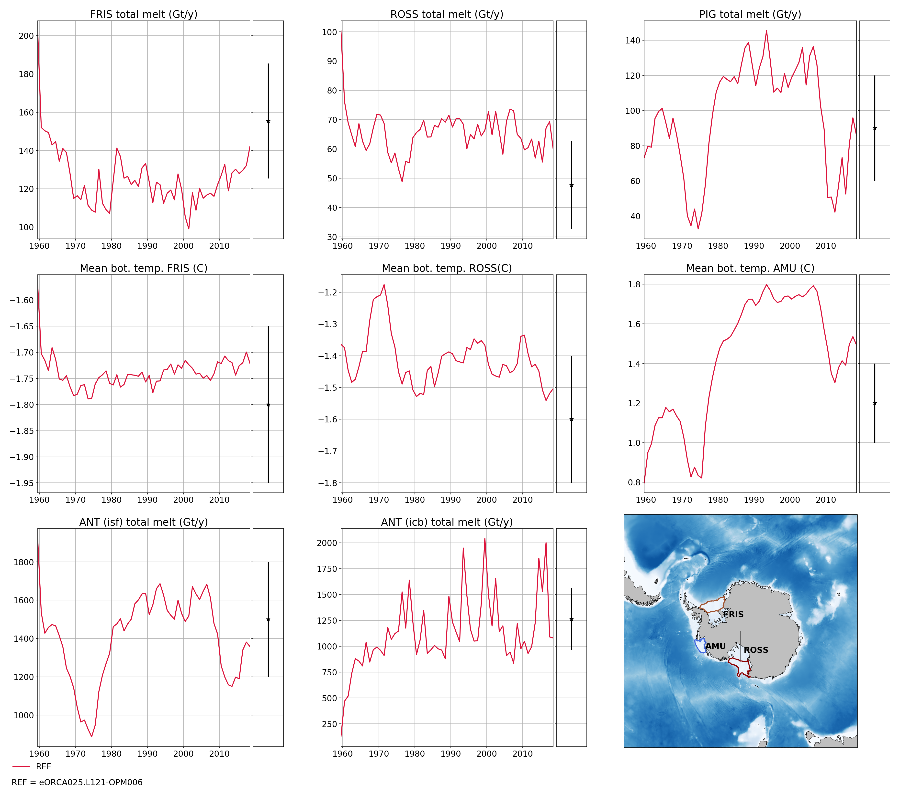
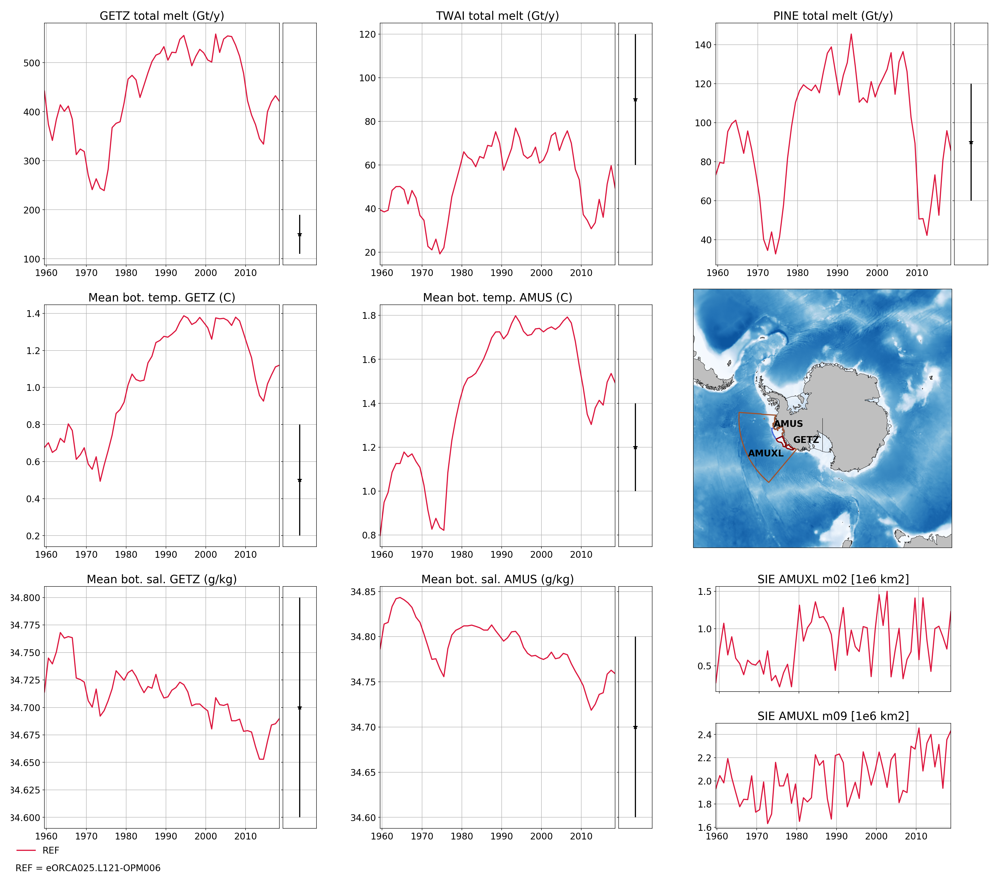
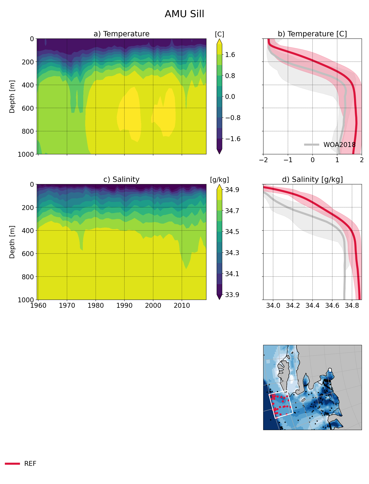

eORCA025.L121-OPM006¶
Summary¶
Namelist¶
Only the activated blocks are presented here:
namelist_oce¶
nam_vvl¶
non linear ssh is used (ie model levels not fixed in time)
z* is used
!-----------------------------------------------------------------------
&nam_vvl ! vertical coordinate options (default: z-star)
!-----------------------------------------------------------------------
ln_vvl_zstar = .true. ! z-star vertical coordinate
ln_vvl_ztilde = .false. ! z-tilde vertical coordinate: only high frequency variations
ln_vvl_layer = .false. ! full layer vertical coordinate
ln_vvl_ztilde_as_zstar = .false. ! ztilde vertical coordinate emulating zstar
ln_vvl_zstar_at_eqtor = .false. ! ztilde near the equator
rn_ahe3 = 0.0 ! thickness diffusion coefficient
rn_rst_e3t = 30.0 ! ztilde to zstar restoration timescale [days]
rn_lf_cutoff = 5.0 ! cutoff frequency for low-pass filter [days]
rn_zdef_max = 0.9 ! maximum fractional e3t deformation
ln_vvl_dbg = .false. ! debug prints (T/F)
/
!-----------------------------------------------------------------------
&namdom ! time and space domain
!-----------------------------------------------------------------------
ln_linssh = .false. ! =T linear free surface ==>> model level are fixed in time
!
rn_rdt = 1350. ! time step for the dynamics and tracer
rn_atfp = 0.1 ! asselin time filter parameter
!
ln_crs = .false. ! Logical switch for coarsening module (T => fill namcrs)
!
ln_meshmask = .true. ! =T create a mesh file
/
namtsd¶
Start from rest
TS from WOA2018 (eORCA025.L121_WOA2018_b0.2_c3.0_d1.0_v19812010.4.nc)
no 3d restoring
!-----------------------------------------------------------------------
&namtsd_drk ! Temperature & Salinity Data (init/dmp) (default: OFF)
! ! if key_drakkar, **only** namtsd_drk is read
!-----------------------------------------------------------------------
ln_tsd_init = .true. ! Initialisation of ocean T & S with T &S input data (T) or not (F)
ln_tsd_dmp = .false. ! damping of ocean T & S toward T &S input data (T) or not (F)
cn_dir = './' ! root directory for the location of the temperature and salinity file
!___________!_____________________________________!___________________!___________!_____________!________!___________!_____________!__________!_______________!
! ! file name ! frequency (hours) ! variable ! time interp.! clim ! 'yearly'/ ! weights ! rotation ! land/sea mask !
! ! ! (if <0 months) ! name ! (logical) ! (T/F) ! 'monthly' ! filename ! pairing ! filename !
! data used for initial condition (istate)
sn_tem_ini = 'eORCA025.L121_WOA2018_b0.2_c3.0_d1.0_v19812010.5', -1., 'votemper', .true. , .true. , 'yearly' , '' , ' ' , ' '
sn_sal_ini = 'eORCA025.L121_WOA2018_b0.2_c3.0_d1.0_v19812010.5', -1., 'vosaline', .true. , .true. , 'yearly' , '' , ' ' , ' '
! data used for damping ( tradmp)
sn_tem_dmp = 'eORCA025.L121_WOA2018_b0.2_c3.0_d1.0_v19812010.5', -1., 'votemper', .true. , .true., 'yearly' , '' , ' ' , ' '
sn_sal_dmp = 'eORCA025.L121_WOA2018_b0.2_c3.0_d1.0_v19812010.5', -1., 'vosaline', .true. , .true., 'yearly' , '' , ' ' , ' '
!
/
namsbc¶
atmospheric flux are computed using a blk formulation
sea-ice is used
sea-ice is levitating for robustness (embeded sea ice is unstable in case thick sea-ice and shallow water)
light penetration into the ocean is activated
duirnal cycle set to false as atmospheric forcing is 3h output_frequency
We check the fresh water budget to avoid any trend in ssh and possible blow up in shallow water due to this in case of strong unbalanced in empmr - icb - isf
sea surface salinity restoring module is activated
runoff module is activated
surface module is call every time step
!-----------------------------------------------------------------------
&namsbc ! Surface Boundary Condition manager (default: NO selection)
!-----------------------------------------------------------------------
nn_fsbc = 1 ! frequency of SBC module call
! ! (control sea-ice & iceberg model call)
! Type of air-sea fluxes
ln_usr = .false. ! user defined formulation (T => check usrdef_sbc)
ln_flx = .false. ! flux formulation (T => fill namsbc_flx )
ln_blk = .true. ! Bulk formulation (T => fill namsbc_blk )
! ! Type of coupling (Ocean/Ice/Atmosphere) :
ln_cpl = .false. ! atmosphere coupled formulation ( requires key_oasis3 )
ln_mixcpl = .false. ! forced-coupled mixed formulation ( requires key_oasis3 )
nn_components = 0 ! configuration of the opa-sas OASIS coupling
! ! =0 no opa-sas OASIS coupling: default single executable config.
! ! =1 opa-sas OASIS coupling: multi executable config., OPA component
! ! =2 opa-sas OASIS coupling: multi executable config., SAS component
! Sea-ice :
nn_ice = 2 ! =0 no ice boundary condition
! ! =1 use observed ice-cover ( => fill namsbc_iif )
! ! =2 or 3 automatically for SI3 or CICE ("key_si3" or "key_cice")
! ! except in AGRIF zoom where it has to be specified
ln_ice_embd = .false. ! =T embedded sea-ice (pressure + mass and salt exchanges)
! ! =F levitating ice (no pressure, mass and salt exchanges)
! Misc. options of sbc :
ln_traqsr = .true. ! Light penetration in the ocean (T => fill namtra_qsr)
ln_dm2dc = .false. ! daily mean to diurnal cycle on short wave
ln_ssr = .true. ! Sea Surface Restoring on T and/or S (T => fill namsbc_ssr)
nn_fwb = 1 ! FreshWater Budget: =0 unchecked
! ! =1 global mean of e-p-r set to zero at each time step
! ! =2 annual global mean of e-p-r set to zero
ln_rnf = .true. ! runoffs (T => fill namsbc_rnf)
ln_apr_dyn = .false. ! Patm gradient added in ocean & ice Eqs. (T => fill namsbc_apr )
ln_wave = .false. ! Activate coupling with wave (T => fill namsbc_wave)
ln_cdgw = .false. ! Neutral drag coefficient read from wave model (T => ln_wave=.true. & fill namsbc_wave)
ln_sdw = .false. ! Read 2D Surf Stokes Drift & Computation of 3D stokes drift (T => ln_wave=.true. & fill namsbc_wave)
nn_sdrift = 0 ! Parameterization for the calculation of 3D-Stokes drift from the surface Stokes drift
! ! = 0 Breivik 2015 parameterization: v_z=v_0*[exp(2*k*z)/(1-8*k*z)]
! ! = 1 Phillips: v_z=v_o*[exp(2*k*z)-beta*sqrt(-2*k*pi*z)*erfc(sqrt(-2*k*z))]
! ! = 2 Phillips as (1) but using the wave frequency from a wave model
ln_tauwoc = .false. ! Activate ocean stress modified by external wave induced stress (T => ln_wave=.true. & fill namsbc_wave)
ln_tauw = .false. ! Activate ocean stress components from wave model
ln_stcor = .false. ! Activate Stokes Coriolis term (T => ln_wave=.true. & ln_sdw=.true. & fill namsbc_wave)
nn_lsm = 0 ! =0 land/sea mask for input fields is not applied (keep empty land/sea mask filename field) ,
! =1:n number of iterations of land/sea mask application for input fields (fill land/sea mask filename field)
/
!-----------------------------------------------------------------------*
namsbc_blk¶
NCAR formulation is used (as recommended in Tsujino et al. 2020)
JRA55 files are drowned and described here
!-----------------------------------------------------------------------
&namsbc_blk ! namsbc_blk generic Bulk formula (ln_blk =T)
!-----------------------------------------------------------------------
! ! bulk algorithm :
ln_NCAR = .true. ! "NCAR" algorithm (Large and Yeager 2008)
ln_COARE_3p0 = .false. ! "COARE 3.0" algorithm (Fairall et al. 2003)
ln_COARE_3p5 = .false. ! "COARE 3.5" algorithm (Edson et al. 2013)
ln_ECMWF = .false. ! "ECMWF" algorithm (IFS cycle 31)
!
rn_zqt = 2. ! Air temperature & humidity reference height (m)
rn_zu = 10. ! Wind vector reference height (m)
ln_Cd_L12 = .false. ! air-ice drags = F(ice concentration) (Lupkes et al. 2012)
ln_Cd_L15 = .false. ! air-ice drags = F(ice concentration) (Lupkes et al. 2015)
ln_taudif = .false. ! HF tau contribution: use "mean of stress module - module of the mean stress" data
rn_pfac = 1. ! multiplicative factor for precipitation (total & snow)
rn_efac = 1. ! multiplicative factor for evaporation (0. or 1.)
rn_vfac = 0. ! multiplicative factor for ocean & ice velocity used to
! ! calculate the wind stress (0.=absolute or 1.=relative winds)
cn_dir = './'
!_______!__________________!___________________!___________!_____________!_________!___________!______________________________!__________!______!
! ! file name ! frequency (hours) ! variable ! time interp.! clim ! 'yearly'/ ! weights filename ! rotation ! lsm !
! ! ! (if <0 months) ! name ! (logical) ! (T/F) ! 'monthly' ! ! paring ! !
!_______!__________________!___________________!___________!_____________!_________!___________!______________________________!__________!______!
sn_wndi = 'drowned_uas_JRA55' , 3. , 'uas' , .true. , .false. , 'yearly' , 'eORCA025_JRA55_do_c3.0_weights_bicubic.nc' , 'U1' , ''
sn_wndj = 'drowned_vas_JRA55' , 3. , 'vas' , .true. , .false. , 'yearly' , 'eORCA025_JRA55_do_c3.0_weights_bicubic.nc' , 'V1' , ''
sn_qsr = 'drowned_rsds_JRA55' , 3. , 'rsds' , .true. , .false. , 'yearly' , 'eORCA025_JRA55_do_c3.0_weights_bilin.nc' , '' , ''
sn_qlw = 'drowned_rlds_JRA55' , 3. , 'rlds' , .true. , .false. , 'yearly' , 'eORCA025_JRA55_do_c3.0_weights_bilin.nc' , '' , ''
sn_tair = 'drowned_tas_JRA55' , 3. , 'tas' , .true. , .false. , 'yearly' , 'eORCA025_JRA55_do_c3.0_weights_bilin.nc' , '' , ''
sn_humi = 'drowned_huss_JRA55' , 3. , 'huss' , .true. , .false. , 'yearly' , 'eORCA025_JRA55_do_c3.0_weights_bilin.nc' , '' , ''
sn_prec = 'drowned_tprecip_JRA55' , 3. , 'tprecip', .true. , .false. , 'yearly' , 'eORCA025_JRA55_do_c3.0_weights_bilin.nc' , '' , ''
sn_snow = 'drowned_prsn_JRA55 ' , 3. , 'prsn' , .true. , .false. , 'yearly' , 'eORCA025_JRA55_do_c3.0_weights_bilin.nc' , '' , ''
sn_slp = 'drowned_psl_JRA55' , 3. , 'psl' , .true. , .false. , 'yearly' , 'eORCA025_JRA55_do_c3.0_weights_bilin.nc' , '' , ''
sn_cc = 'NOT USED' , 24. , 'CC' , .false. , .false. , 'yearly' , '' , '' , ''
sn_tdif = 'NOT_USED' , 24. , 'taudif' , .false. , .true. , 'yearly' , 'eORCA025_JRA55_do_c3.0_weights_bilin.nc' , '' , ''
/
!-----------------------------------------------------------------------
namsbc_ssr¶
sea surface salinity restoring is caped
sea surface restoring is applied everywhere except in the first 150 km of the continent or large islands in order to avoid killing coastal circulation, runoff plumes and others not represented in the climatology.
!-----------------------------------------------------------------------
&namsbc_ssr ! surface boundary condition : sea surface restoring (ln_ssr =T)
!-----------------------------------------------------------------------
nn_sstr = 0 ! add a retroaction term to the surface heat flux (=1) or not (=0)
rn_dqdt = -40. ! magnitude of the retroaction on temperature [W/m2/K]
nn_sssr = 2 ! add a damping term to the surface freshwater flux (=2)
! ! or to SSS only (=1) or no damping term (=0)
rn_deds = -166.67 ! magnitude of the damping on salinity [mm/day]
ln_sssr_bnd = .true. ! flag to bound erp term (associated with nn_sssr=2)
rn_sssr_bnd = 4.e0 ! ABS(Max/Min) value of the damping erp term [mm/day]
nn_sssr_ice = 1 ! control of sea surface restoring under sea-ice
! 0 = no restoration under ice : * (1-icefrac)
! 1 = restoration everywhere
! >1 = enhanced restoration under ice : 1+(nn_icedmp-1)*icefrac
cn_dir = './' ! root directory for the SST/SSS data location
!___________!_________________________!___________________!___________!_____________!________!___________!___________!__________!_______________!
! ! file name ! frequency (hours) ! variable ! time interp.! clim ! 'yearly'/ ! weights e ! rotation ! land/sea mask !
! ! ! (if <0 months) ! name ! (logical) ! (T/F) ! 'monthly' ! filename ! pairing ! filename !
sn_sst = 'NOT_USED.nc' , 24. , 'sst' , .false. , .false., 'yearly' , '' , '' , ''
sn_sss = 'eORCA025_sss_WOA2018_c3.0_v19812010.5' , -1. , 'sosaline' , .true. , .true. , 'yearly' , '' , '' , ''
/
!-----------------------------------------------------------------------
&namsbc_ssr_drk ! surface boundary condition : sea surface restoring (ln_ssr =T)
!-----------------------------------------------------------------------
ln_sssr_flt = .false. ! use filtering of SSS model for sss restoring
nn_shap_iter = 300 ! number of iteration of the shapiro filter
ln_sssr_msk = .true. ! use a mask near the coast
!___________!____________________!___________________!__________!_____________!________!___________!__________!__________!_______________!
! ! file name ! frequency (hours) ! variable ! time interp.! clim ! 'yearly'/ ! weights ! rotation ! land/sea mask !
! ! ! (if <0 months) ! name ! (logical) ! (T/F) ! 'monthly' ! filename ! pairing ! filename !
sn_coast = 'eORCA025_distcoast_b0.2_v0.0.nc' , 0. , 'Tcoast' , .false. , .true. , 'yearly' , '' , '' , ''
rn_dist = 150. ! distance to the coast
/
!-----------------------------------------------------------------------
namsbc_rnf¶
runoff is mixed in the top 10 meters by adding some additional mixing (2.e-3 m2/s)
!-----------------------------------------------------------------------
&namsbc_rnf ! runoffs (ln_rnf =T)
!-----------------------------------------------------------------------
ln_rnf_mouth = .true. ! specific treatment at rivers mouths
rn_hrnf = 10.e0 ! depth over which enhanced vertical mixing is used (ln_rnf_mouth=T)
rn_avt_rnf = 2.e-3 ! value of the additional vertical mixing coef. [m2/s] (ln_rnf_mouth=T)
rn_rfact = 1.e0 ! multiplicative factor for runoff
ln_rnf_depth = .false. ! read in depth information for runoff
ln_rnf_tem = .false. ! read in temperature information for runoff
ln_rnf_sal = .false. ! read in salinity information for runoff
ln_rnf_depth_ini = .false. ! compute depth at initialisation from runoff file
rn_rnf_max = 5.735e-4 ! max value of the runoff climatologie over global domain ( ln_rnf_depth_ini = .true )
rn_dep_max = 150. ! depth over which runoffs is spread ( ln_rnf_depth_ini = .true )
nn_rnf_depth_file = 0 ! create (=1) a runoff depth file or not (=0)
ln_rnf_icb = .false. ! read in iceberg flux from a file (fill sn_i_rnf if .true.)
cn_dir = './' ! root directory for the runoff data location
!___________!_________________________!___________________!___________!_____________!________!___________!__________________!__________!_______________!
! ! file name ! frequency (hours) ! variable ! time interp.! clim ! 'yearly'/ ! weights filename ! rotation ! land/sea mask !
! ! ! (if <0 months) ! name ! (logical) ! (T/F) ! 'monthly' ! ! pairing ! filename !
sn_rnf = 'eORCA025_runoff_b0.2_v0.0.nc', -1. , 'sorunoff', .true. , .true. , 'yearly' , '' , '' , ''
sn_cnf = 'eORCA025_runoff_b0.2_v0.0.nc', 0. , 'socoefr' , .false. , .true. , 'yearly' , '' , '' , ''
sn_s_rnf = 'NOT_USED' , 24. , 'rosaline', .true. , .true. , 'yearly' , '' , '' , ''
sn_t_rnf = 'NOT_USED' , 24. , 'rotemper', .true. , .true. , 'yearly' , '' , '' , ''
sn_dep_rnf = 'NOT_USED' , 0. , 'rodepth' , .false. , .true. , 'yearly' , '' , '' , ''
sn_i_rnf = 'NOT_USED' , -1. , 'sorunoff', .true. , .true. , 'yearly' , '' , '' , ''
/
namberg¶
iceberg lagrangian model activated.
trajectory updated every day
Merino 2016 activated
grounded as default (ie only when an iceberg hit the coastline)
!-----------------------------------------------------------------------
&namberg ! iceberg parameters (default: OFF)
!-----------------------------------------------------------------------
ln_icebergs = .true. ! activate iceberg floats (force =F with "key_agrif")
!
! ! diagnostics:
ln_bergdia = .true. ! Calculate budgets
nn_verbose_level = 0 ! Turn on more verbose output if level > 0
nn_verbose_write = 64 ! Timesteps between verbose messages
nn_sample_rate = 64 ! Timesteps between sampling for trajectory storage
!
! ! iceberg setting:
! ! Initial mass required for an iceberg of each class
rn_initial_mass = 8.8e7, 4.1e8, 3.3e9, 1.8e10, 3.8e10, 7.5e10, 1.2e11, 2.2e11, 3.9e11, 7.4e11
! ! Proportion of calving mass to apportion to each class
rn_distribution = 0.24, 0.12, 0.15, 0.18, 0.12, 0.07, 0.03, 0.03, 0.03, 0.02
! ! Ratio between effective and real iceberg mass (non-dim)
! ! i.e. number of icebergs represented at a point
rn_mass_scaling = 2000., 200., 50., 20., 10., 5., 2., 1., 1., 1.
! thickness of newly calved bergs (m)
rn_initial_thickness = 40., 67., 133., 175., 250., 250., 250., 250., 250., 250.
!
rn_rho_bergs = 850. ! Density of icebergs
rn_LoW_ratio = 1.5 ! Initial ratio L/W for newly calved icebergs
ln_operator_splitting = .true. ! Use first order operator splitting for thermodynamics
rn_bits_erosion_fraction = 0. ! Fraction of erosion melt flux to divert to bergy bits
rn_sicn_shift = 0. ! Shift of sea-ice concn in erosion flux (0<sicn_shift<1)
ln_passive_mode = .false. ! iceberg - ocean decoupling
nn_test_icebergs = -1 ! Create test icebergs of this class (-1 = no)
! ! Put a test iceberg at each gridpoint in box (lon1,lon2,lat1,lat2)
rn_test_box = 108.0, 116.0, -66.0, -58.0
ln_use_calving = .false. ! Use calving data even when nn_test_icebergs > 0
rn_speed_limit = 0. ! CFL speed limit for a berg
!
ln_M2016 = .true. ! use Merino et al. (2016) modification (use of 3d ocean data instead of only sea surface data)
ln_icb_grd = .false. ! ground icb when icb bottom level hit oce bottom level (need ln_M2016 to be activated)
!
cn_dir = './' ! root directory for the calving data location
!___________!_________________________!___________________!___________!_____________!________!___________!__________________!__________!_______________!
! ! file name ! frequency (hours) ! variable ! time interp.! clim ! 'yearly'/ ! weights filename ! rotation ! land/sea mask !
! ! ! (if <0 months) ! name ! (logical) ! (T/F) ! 'monthly' ! ! pairing ! filename !
sn_icb = 'eORCA025_calving_b0.2_v2.3', -12. ,'soicbclv' , .true. , .true. , 'yearly' , '' , '' , ''
/
namisf¶
all cavities are opened. We do not use yet the capability to split open cavities and parametrised cavities
3 equation formulation as in ISOMIP+ is used
Stanton number used in 0.0007 as in Ute paper
Cd=2.5e-3 (see top friction block)
gamma t/gammas = 35 as in Ute paper
Gamma is velocity dependent with prescribed 2d top tidal velocity.
losch top boundary layer is set to 20m as the level distribution is design to have a ‘plateau’ at about e3t=~20m
ice load computed as in ISOMIP
&namisf ! Top boundary layer (ISF) (default: OFF)
!-----------------------------------------------------------------------
!
! ---------------- ice shelf load -------------------------------
!
cn_isfload = 'uniform' ! scheme to compute ice shelf load (ln_isfcav = .true. in domain_cfg.nc)
rn_isfload_T = -1.9
rn_isfload_S = 34.4
!
! ---------------- ice shelf melt formulation -------------------------------
!
ln_isf = .true. ! activate ice shelf module
ln_isfdebug = .false. ! add debug print in ISF code (global min/max/sum of specific variable)
cn_isfdir = './' ! directory for all ice shelf input file
!
! ---------------- cavities opened -------------------------------
!
ln_isfcav_mlt = .true. ! ice shelf melting into the cavity (need ln_isfcav = .true. in domain_cfg.nc)
cn_isfcav_mlt = '3eq' ! ice shelf melting formulation (spe/2eq/3eq/oasis)
! ! spe = fwfisf is read from a forcing field
! ! 2eq = ISOMIP like: 2 equations formulation (Hunter et al., 2006 for a short description)
! ! 3eq = ISOMIP+ like: 3 equations formulation (Asay-Davis et al., 2016 for a short description)
! ! oasis = fwfisf is given by oasis and pattern by file sn_isfcav_fwf
! ! cn_isfcav_mlt = 2eq or 3eq cases:
cn_gammablk = 'vel' ! scheme to compute gammat/s (spe,ad15,hj99)
! ! spe = constant transfert velocity (rn_gammat0, rn_gammas0)
! ! vel = velocity dependent transfert velocity (u* * gammat/s) (Asay-Davis et al. 2016 for a short description)
! ! vel_stab = velocity and stability dependent transfert coeficient (Holland et al. 1999 for a complete description)
rn_gammat0 = 1.4e-2 ! gammat coefficient used in spe, vel and vel_stab gamma computation method
rn_gammas0 = 4.0e-4 ! gammas coefficient used in spe, vel and vel_stab gamma computation method
!
rn_htbl = 20. ! thickness of the top boundary layer (Losh et al. 2008)
! ! 0 => thickness of the tbl = thickness of the first wet cell
!
!* 'spe' and 'oasis' case
!___________!_____________!___________________!___________!_____________!_________!___________!__________!__________!_______________!
! ! file name ! frequency (hours) ! variable ! time interp.! clim ! 'yearly'/ ! weights ! rotation ! land/sea mask !
! ! ! (if <0 months) ! name ! (logical) ! (T/F) ! 'monthly' ! filename ! pairing ! filename !
sn_isfcav_fwf = 'NOT_USED.nc' , -12. , 'fwflisf' , .false. , .true. , 'yearly' , '' , '' , ''
!
! ---------------- cavities parametrised -------------------------------
!
ln_isfpar_mlt = .false. ! ice shelf melting parametrised
cn_isfpar_mlt = 'spe' ! ice shelf melting parametrisation (spe/bg03/oasis)
! ! spe = fwfisf is read from a forcing field
! ! bg03 = melt computed using Beckmann and Goosse parametrisation
! ! oasis = fwfisf is given by oasis and pattern by file sn_isfpar_fwf
!
!* all cases
!___________!_____________!___________________!___________!_____________!_________!___________!__________!__________!_______________!
! ! file name ! frequency (hours) ! variable ! time interp.! clim ! 'yearly'/ ! weights ! rotation ! land/sea mask !
! ! ! (if <0 months) ! name ! (logical) ! (T/F) ! 'monthly' ! filename ! pairing ! filename !
sn_isfpar_zmax = 'NOT_USED' , 0 ,'sozisfmax', .false. , .true. , 'yearly' , '' , '' , ''
sn_isfpar_zmin = 'NOT_USED' , 0 ,'sozisfmin', .false. , .true. , 'yearly' , '' , '' , ''
!* 'spe' and 'oasis' case
sn_isfpar_fwf = 'NOT_USED' , -12. ,'sofwfisf' , .false. , .true. , 'yearly' , '' , '' , ''
!* 'bg03' case
sn_isfpar_Leff = 'NOT_USED' , 0. ,'Leff' , .false. , .true. , 'yearly' , '' , '' , ''
!
! ---------------- ice sheet coupling -------------------------------
!
ln_isfcpl = .false.
nn_drown = 10 ! number of iteration of the extrapolation loop (fill the new wet cells)
ln_isfcpl_cons = .false.
/
namlbc¶
slip condition is used.
Local change has been made to:
decrease slightly transport across Bering, we used no slip along this strait.
increase EKE in Lab sea, we set no slip along west coast of Greenland
improve Med sea representation, we set no slip in med Sea
This is done via the namlbc_drk block and the file eORCA025_shlat2d_v0.0.nc.
!-----------------------------------------------------------------------
&namlbc ! lateral momentum boundary condition (default: NO selection)
!-----------------------------------------------------------------------
! ! free slip ! partial slip ! no slip ! strong slip
rn_shlat = 0. ! shlat = 0 ! 0 < shlat < 2 ! shlat = 2 ! 2 < shlat
ln_vorlat = .false. ! consistency of vorticity boundary condition with analytical Eqs.
/
!-----------------------------------------------------------------------
&namlbc_drk ! lateral momentum boundary condition (default: NO selection)
!-----------------------------------------------------------------------
ln_shlat2d = .true. ! use 2D file for shlat
cn_dir = './'
!___________!____________________!___________________!___________!_____________!________!___________!__________________!__________!_______________!
! ! file name ! frequency (hours) ! variable ! time interp.! clim ! 'yearly'/ ! weights filename ! rotation ! land/sea mask !
! ! ! (if <0 months) ! name ! (logical) ! (T/F) ! 'monthly' ! ! pairing ! filename !
sn_shlat2d = 'eORCA025_shlat2d_v0.0' , -12. , 'shlat2d' , .false. , .true. , 'yearly' , '' , '' , ''
/
namdrg¶
quadratic bottom and top friction formulation is used.
implicit top/bottom/ice friction used for stability.
bottom friction value are set as the default
top drag is set to 2.5e-3 as in Chris paper
no uniform background tidal velocity set as we used a 2d file to prescribed it as advised by Jourdain et al. (2018)
a boost of the bottom drag is applied as in GO6 simulation (WHERE ?)
!-----------------------------------------------------------------------
&namdrg ! top/bottom drag coefficient (default: NO selection)
!-----------------------------------------------------------------------
ln_drg_OFF = .false. ! free-slip : Cd = 0 (F => fill namdrg_bot
ln_lin = .false. ! linear drag: Cd = Cd0 Uc0 & namdrg_top)
ln_non_lin = .true. ! non-linear drag: Cd = Cd0 |U|
ln_loglayer = .false. ! logarithmic drag: Cd = vkarmn/log(z/z0) |U|
!
ln_drgimp = .true. ! implicit top/bottom friction flag
ln_drgice_imp = .true. ! implicit ice-ocean drag
/
!-----------------------------------------------------------------------
&namdrg_top ! TOP friction (ln_drg_OFF =F & ln_isfcav=T)
!-----------------------------------------------------------------------
rn_Cd0 = 2.5e-3 ! drag coefficient [-]
rn_Uc0 = 0.4 ! ref. velocity [m/s] (linear drag=Cd0*Uc0)
rn_Cdmax = 0.1 ! drag value maximum [-] (logarithmic drag)
rn_ke0 = 0.0 ! background kinetic energy [m2/s2] (non-linear cases)
rn_z0 = 3.0e-3 ! roughness [m] (ln_loglayer=T)
ln_boost = .false. ! =T regional boost of Cd0 ; =F constant
rn_boost = 50. ! local boost factor [-]
/
!-----------------------------------------------------------------------
&namdrg_top_tipaccs ! TOP tidal velocity (ln_boost = T )
!-----------------------------------------------------------------------
ln_2d_ttv = .true.
rn_ttv_sf= 0.656 ! jourdain et al. (2018)
rn_ttv_os= 0.003 ! offset (m/s)
cn_dirttv = './' ! root directory for the boost file ( top friction)
!___________!____________!___________________!___________!_____________!________!___________!___________!__________!_______________!
! ! file name ! frequency (hours) ! variable ! time interp.! clim ! 'yearly'/ ! weights e ! rotation ! land/sea mask !
! ! ! (if <0 months) ! name ! (logical) ! (T/F) ! 'monthly' ! filename ! pairing ! filename !
sn_ttv = 'eORCA025_ttv_b0.2_v0.0.nc', 0. , 'ttv' , .false. , .true. , 'yearly' , '' , '' , ''
/
!-----------------------------------------------------------------------
&namdrg_bot ! BOTTOM friction (ln_OFF =F)
!-----------------------------------------------------------------------
rn_Cd0 = 1.e-3 ! drag coefficient [-]
rn_Uc0 = 0.4 ! ref. velocity [m/s] (linear drag=Cd0*Uc0)
rn_Cdmax = 0.1 ! drag value maximum [-] (logarithmic drag)
rn_ke0 = 2.5e-3 ! background kinetic energy [m2/s2] (non-linear cases)
rn_z0 = 3.e-3 ! roughness [m] (ln_loglayer=T)
ln_boost = .true. ! =T regional boost of Cd0 ; =F constant
rn_boost = 50. ! local boost factor [-]
/
!-----------------------------------------------------------------------
&namdrg_bot_drk ! BOTTOM friction (ln_boost = T )
!-----------------------------------------------------------------------
cn_dir = './' ! root directory for the boost file ( bot friction)
!___________!____________!___________________!___________!_____________!________!___________!___________!__________!_______________!
! ! file name ! frequency (hours) ! variable ! time interp.! clim ! 'yearly'/ ! weights e ! rotation ! land/sea mask !
! ! ! (if <0 months) ! name ! (logical) ! (T/F) ! 'monthly' ! filename ! pairing ! filename !
sn_boost = 'eORCA025_bfr2d_v0.0.nc' , -12. , 'bfr_coef', .false. , .true. , 'yearly' , '' , '' , ''
/
nambbc¶
geothermal heat flux is prescribed by an annual climatology
!-----------------------------------------------------------------------
&nambbc ! bottom temperature boundary condition (default: OFF)
!-----------------------------------------------------------------------
ln_trabbc = .true. ! Apply a geothermal heating at the ocean bottom
nn_geoflx = 2 ! geothermal heat flux: = 1 constant flux
! ! = 2 read variable flux [mW/m2]
rn_geoflx_cst = 86.4e-3 ! Constant value of geothermal heat flux [mW/m2]
cn_dir = './' ! root directory for the geothermal data location
!___________!_________________________!___________________!___________!_____________!________!___________!__________________!__________!_______________!
! ! file name ! frequency (hours) ! variable ! time interp.! clim ! 'yearly'/ ! weights filename ! rotation ! land/sea mask !
! ! ! (if <0 months) ! name ! (logical) ! (T/F) ! 'monthly' ! ! pairing ! filename !
sn_qgh ='ghflux_v2.0.nc' , -12. , 'gh_flux' , .false. , .true. , 'yearly' , 'eORCA025_ghflux_v2.0_c3.0_weights_bilin.nc' , '' , ''
/
nambbl¶
bottom boundary layer parametrisation is used as in GO6 simulation (does this param really efficient, I don’t know).
bbl activated on k level (not on depth)
!-----------------------------------------------------------------------
&nambbl ! bottom boundary layer scheme (default: OFF)
!-----------------------------------------------------------------------
ln_trabbl = .true. ! Bottom Boundary Layer parameterisation flag
nn_bbl_ldf = 1 ! diffusive bbl (=1) or not (=0)
nn_bbl_adv = 1 ! advective bbl (=1/2) or not (=0)
rn_ahtbbl = 1000. ! lateral mixing coefficient in the bbl [m2/s]
rn_gambbl = 10. ! advective bbl coefficient [s]
/
!-----------------------------------------------------------------------
&nambbl_drk ! bottom boundary layer scheme
!-----------------------------------------------------------------------
ln_kriteria = .true. ! activate bbl only on different k level
/
nameos¶
we use eos10 instead of eos80. => ALL OUPUT WILL USE EOS10 UNITS
!-----------------------------------------------------------------------
&nameos ! ocean Equation Of Seawater (default: NO selection)
!-----------------------------------------------------------------------
ln_teos10 = .true. ! = Use TEOS-10
ln_eos80 = .false ! = Use EOS80
ln_seos = .false. ! = Use S-EOS (simplified Eq.)
!
! ! S-EOS coefficients (ln_seos=T):
! ! rd(T,S,Z)*rau0 = -a0*(1+.5*lambda*dT+mu*Z+nu*dS)*dT+b0*dS
rn_a0 = 1.6550e-1 ! thermal expension coefficient
rn_b0 = 7.6554e-1 ! saline expension coefficient
rn_lambda1 = 5.9520e-2 ! cabbeling coeff in T^2 (=0 for linear eos)
rn_lambda2 = 7.4914e-4 ! cabbeling coeff in S^2 (=0 for linear eos)
rn_mu1 = 1.4970e-4 ! thermobaric coeff. in T (=0 for linear eos)
rn_mu2 = 1.1090e-5 ! thermobaric coeff. in S (=0 for linear eos)
rn_nu = 2.4341e-3 ! cabbeling coeff in T*S (=0 for linear eos)
/
namtra¶
namtra_dmp¶
3d tracer damping is done in Red sea and persic gulf (180 days)
strong restoring downstream of Gib, Bab el mandel and Ormuz strait (6d)
depth range for Gib is 600-1300m
depth range for bab el mandeb 0-6000
depth range for Ormuz 0-6000
Location and restoring strength are hard coded. No file is needed.
!-----------------------------------------------------------------------
&namtra_dmp ! tracer: T & S newtonian damping (default: OFF)
!-----------------------------------------------------------------------
ln_tradmp = .true. ! add a damping term (using resto.nc coef.)
nn_zdmp = 0 ! vertical shape =0 damping throughout the water column
! ! =1 no damping in the mixing layer (kz criteria)
! ! =2 no damping in the mixed layer (rho crieria)
cn_resto = 'NOT_USED' ! Name of file containing restoration coeff. field (use dmp_tools to create this)
/
!-----------------------------------------------------------------------
&namtra_dmp_drk ! tracer: T & S newtonian damping (default: OFF)
!-----------------------------------------------------------------------
nn_hdmp = -2 ! -2 = Drakkar customisation ( use dtacof in tradmp.F90 )
! any other value : Nemo standard code
nn_file = 1 ! create a damping.coeff NetCDF file (=1) or not (=0)
! The output file can then be used as input resto file (cn_resto)
ln_dmpmask = .false. ! Read dmp_mask.nc file when T (between 0 and 1 )
rn_timsk = 730. ! Time scale used for dmp_mask
cn_dir = './' ! directtory wher to find damping mask
!___________!____________!___________________!___________!_____________!________!___________!___________!__________!_______________!
! ! file name ! frequency (hours) ! variable ! time interp.! clim ! 'yearly'/ ! weights e ! rotation ! land/sea mask !
! ! ! (if <0 months) ! name ! (logical) ! (T/F) ! 'monthly' ! filename ! pairing ! filename !
sn_dmp = 'eORCA025.L121_dmpmsk_v0.0' , -12. , 'wdmp' , .false. , .true. , 'yearly' , '' , '' , ''
/
namtra_qsr¶
RGB light penetration is activated
2d climatology of chlorophyl is provided (chlorophyl_v0.0.nc)
rn_abs is decrease by 10% compare to the default value (advised by MERCATOR)
!-----------------------------------------------------------------------
&namtra_qsr ! penetrative solar radiation (ln_traqsr =T)
!-----------------------------------------------------------------------
! ! type of penetration (default: NO selection)
ln_qsr_rgb = .true. ! RGB light penetration (Red-Green-Blue)
ln_qsr_2bd = .false. ! 2BD light penetration (two bands)
ln_qsr_bio = .false. ! bio-model light penetration
! ! RGB & 2BD choices:
rn_abs = 0.53 ! RGB & 2BD: fraction absorbed in the very near surface ! std value 0.58. RBB -> 0.53
rn_si0 = 0.35 ! RGB & 2BD: shortess depth of extinction
nn_chldta = 1 ! RGB : Chl data (=1) or cst value (=0)
rn_si1 = 23.0 ! 2BD : longest depth of extinction
! ! type of penetration (default: NO selection)
cn_dir = './' ! root directory for the chlorophyl data location
!___________!_________________________!___________________!___________!_____________!________!___________!__________!__________!_______________!
! ! file name ! frequency (hours) ! variable ! time interp.! clim ! 'yearly'/ ! weights ! rotation ! land/sea mask !
! ! ! (if <0 months) ! name ! (logical) ! (T/F) ! 'monthly' ! filename ! pairing ! filename !
sn_chl = 'chlorophyl_v0.0.nc' , -1. , 'CHLA' , .true. , .true. , 'yearly' , 'eORCA025_chlorophyl_v0.0_c3.0_weights_bilin.nc' , '' , ''
/
namtra_adv¶
tracer advection scheme is FCT (old TVD scheme)
2th order is used on horizontal and vertical (4th order not compatible with iceshelf need to be investigated)
!-----------------------------------------------------------------------
&namtra_adv ! advection scheme for tracer (default: NO selection)
!-----------------------------------------------------------------------
ln_traadv_OFF = .false. ! No tracer advection
ln_traadv_cen = .false. ! 2nd order centered scheme
nn_cen_h = 4 ! =2/4, horizontal 2nd order CEN / 4th order CEN
nn_cen_v = 4 ! =2/4, vertical 2nd order CEN / 4th order COMPACT
ln_traadv_fct = .true. ! FCT scheme
nn_fct_h = 4 ! =2/4, horizontal 2nd / 4th order
nn_fct_v = 2 ! =2/4, vertical 2nd / COMPACT 4th order
ln_traadv_mus = .false. ! MUSCL scheme
ln_mus_ups = .false. ! use upstream scheme near river mouths
ln_traadv_ubs = .false. ! UBS scheme
nn_ubs_v = 2 ! =2 , vertical 2nd order FCT / COMPACT 4th order
ln_traadv_qck = .false. ! QUICKEST scheme
/
namtra_ldf¶
isopycnal laplacian tracers
2d variation (scale with the grid size)
coefficient set as in GO8 prototype
!-----------------------------------------------------------------------
&namtra_ldf ! lateral diffusion scheme for tracers (default: NO selection)
!-----------------------------------------------------------------------
! ! Operator type:
ln_traldf_OFF = .false. ! No explicit diffusion
ln_traldf_lap = .true. ! laplacian operator
ln_traldf_blp = .false. ! bilaplacian operator
!
! ! Direction of action:
ln_traldf_lev = .false. ! iso-level
ln_traldf_hor = .false. ! horizontal (geopotential)
ln_traldf_iso = .true. ! iso-neutral (standard operator)
ln_traldf_triad = .false. ! iso-neutral (triad operator)
!
! ! iso-neutral options:
ln_traldf_msc = .false. ! Method of Stabilizing Correction (both operators)
rn_slpmax = 0.01 ! slope limit (both operators)
ln_triad_iso = .false. ! pure horizontal mixing in ML (triad only)
rn_sw_triad = 1 ! =1 switching triad ; =0 all 4 triads used (triad only)
ln_botmix_triad = .false. ! lateral mixing on bottom (triad only)
!
! ! Coefficients:
nn_aht_ijk_t = 20 ! space/time variation of eddy coefficient:
! ! =-20 (=-30) read in eddy_diffusivity_2D.nc (..._3D.nc) file
! ! = 0 constant
! ! = 10 F(k) =ldf_c1d
! ! = 20 F(i,j) =ldf_c2d
! ! = 21 F(i,j,t) =Treguier et al. JPO 1997 formulation
! ! = 30 F(i,j,k) =ldf_c2d * ldf_c1d
! ! = 31 F(i,j,k,t)=F(local velocity and grid-spacing)
! ! time invariant coefficients: aht0 = 1/2 Ud*Ld (lap case)
! ! or = 1/12 Ud*Ld^3 (blp case)
rn_Ud = 0.011 ! lateral diffusive velocity [m/s] (nn_aht_ijk_t= 0, 10, 20, 30)
rn_Ld = 200.e+3 ! lateral diffusive length [m] (nn_aht_ijk_t= 0, 10)
/
namdyn¶
namdyn_adv¶
vector form advection scheme is used with Hollingsworth Correction
!-----------------------------------------------------------------------
&namdyn_adv ! formulation of the momentum advection (default: NO selection)
!-----------------------------------------------------------------------
ln_dynadv_OFF = .false. ! linear dynamics (no momentum advection)
ln_dynadv_vec = .true. ! vector form - 2nd centered scheme
nn_dynkeg = 1 ! grad(KE) scheme: =0 C2 ; =1 Hollingsworth correction
ln_dynadv_cen2 = .false. ! flux form - 2nd order centered scheme
ln_dynadv_ubs = .false. ! flux form - 3rd order UBS scheme
/
namdyn_vor¶
vorticity scheme is een with the old formulation (e3f computation) (as used by GO8 prototype)
!-----------------------------------------------------------------------
&namdyn_vor ! Vorticity / Coriolis scheme (default: NO selection)
!-----------------------------------------------------------------------
ln_dynvor_ene = .false. ! energy conserving scheme
ln_dynvor_ens = .false. ! enstrophy conserving scheme
ln_dynvor_mix = .false. ! mixed scheme
ln_dynvor_enT = .false. ! energy conserving scheme (T-point)
ln_dynvor_eeT = .false. ! energy conserving scheme (een using e3t)
ln_dynvor_een = .true. ! energy & enstrophy scheme
nn_een_e3f = 0 ! =0 e3f = mi(mj(e3t))/4
! ! =1 e3f = mi(mj(e3t))/mi(mj( tmask))
ln_dynvor_msk = .false. ! vorticity multiplied by fmask (=T) ==>>> PLEASE DO NOT ACTIVATE
! ! (f-point vorticity schemes only)
/
namdyn_ldf¶
bilaplacian formulation
2d variation (grid size scaling)
horizontal direction
coefficient as in GO8 prototype
!----------------------------------------------------------------------- &namdyn_ldf ! lateral diffusion on momentum (default: NO selection) !----------------------------------------------------------------------- ! ! Type of the operator : ln_dynldf_OFF = .false. ! No operator (i.e. no explicit diffusion) ln_dynldf_lap = .false. ! laplacian operator ln_dynldf_blp = .true. ! bilaplacian operator ! ! Direction of action : ln_dynldf_lev = .false. ! iso-level ln_dynldf_hor = .true. ! horizontal (geopotential) ln_dynldf_iso = .false. ! iso-neutral (lap only) ! ! Coefficient nn_ahm_ijk_t = 20 ! space/time variation of eddy coefficient : ! ! =-30 read in eddy_viscosity_3D.nc file ! ! =-20 read in eddy_viscosity_2D.nc file ! ! = 0 constant ! ! = 10 F(k)=c1d ! ! = 20 F(i,j)=F(grid spacing)=c2d ! ! = 30 F(i,j,k)=c2d*c1d ! ! = 31 F(i,j,k)=F(grid spacing and local velocity) ! ! = 32 F(i,j,k)=F(local gridscale and deformation rate) ! ! time invariant coefficients : ahm = 1/2 Uv*Lv (lap case) ! ! or = 1/12 Uv*Lv^3 (blp case) rn_Uv = 0.0838 ! lateral viscous velocity [m/s] (nn_ahm_ijk_t= 0, 10, 20, 30) rn_Lv = 10.e+3 ! lateral viscous length [m] (nn_ahm_ijk_t= 0, 10) ! ! Smagorinsky settings (nn_ahm_ijk_t= 32) : rn_csmc = 3.5 ! Smagorinsky constant of proportionality rn_minfac = 1.0 ! multiplier of theorectical lower limit rn_maxfac = 1.0 ! multiplier of theorectical upper limit ! ! iso-neutral laplacian operator (ln_dynldf_iso=T) : rn_ahm_b = 0.0 ! background eddy viscosity [m2/s] /
namdyn_spg¶
split explicity formulation
same set up as in GO8 prototype
!-----------------------------------------------------------------------
&namdyn_spg ! surface pressure gradient (default: NO selection)
!-----------------------------------------------------------------------
ln_dynspg_exp = .false. ! explicit free surface
ln_dynspg_ts = .true. ! split-explicit free surface
ln_bt_fw = .true. ! Forward integration of barotropic Eqs.
ln_bt_av = .true. ! Time filtering of barotropic variables
nn_bt_flt = 1 ! Time filter choice = 0 None
! ! = 1 Boxcar over nn_baro sub-steps
! ! = 2 Boxcar over 2*nn_baro " "
ln_bt_auto = .true. ! Number of sub-step defined from:
rn_bt_cmax = 0.8 ! =T : the Maximum Courant Number allowed
nn_baro = 30 ! =F : the number of sub-step in rn_rdt seconds
rn_bt_alpha = 0. ! Temporal diffusion parameter (if ln_bt_av=F)
/
namdyn_hpg¶
use of the isf formulation (as sco but with isf load included)
!-----------------------------------------------------------------------
&namdyn_hpg ! Hydrostatic pressure gradient option (default: NO selection)
!-----------------------------------------------------------------------
ln_hpg_zco = .false. ! z-coordinate - full steps
ln_hpg_zps = .false. ! z-coordinate - partial steps (interpolation)
ln_hpg_sco = .false. ! s-coordinate (standard jacobian formulation)
ln_hpg_isf = .true. ! s-coordinate (sco ) adapted to isf
ln_hpg_djc = .false. ! s-coordinate (Density Jacobian with Cubic polynomial)
ln_hpg_prj = .false. ! s-coordinate (Pressure Jacobian scheme)
/
namzdf¶
convection represented by an increase of kz (enhance vertical diffusion)
double diffusion activated (as in GO8 prototype)
internal wave mixing activated (new tidal mixing parametrisation, former one has been removed)
kz as recommended by Casimir (compatible with imx scheme). No need of a background as iwm activated.
!-----------------------------------------------------------------------
&namzdf ! vertical physics manager (default: NO selection)
!-----------------------------------------------------------------------
! ! adaptive-implicit vertical advection
ln_zad_Aimp = .true. ! Courant number dependent scheme (Shchepetkin 2015)
!
! ! type of vertical closure (required)
ln_zdfcst = .false. ! constant mixing
ln_zdfric = .false. ! local Richardson dependent formulation (T => fill namzdf_ric)
ln_zdftke = .true. ! Turbulent Kinetic Energy closure (T => fill namzdf_tke)
ln_zdfgls = .false. ! Generic Length Scale closure (T => fill namzdf_gls)
ln_zdfosm = .false. ! OSMOSIS BL closure (T => fill namzdf_osm)
!
! ! convection
ln_zdfevd = .true. ! enhanced vertical diffusion
nn_evdm = 1 ! apply on tracer (=0) or on tracer and momentum (=1)
rn_evd = 10. ! mixing coefficient [m2/s]
!
ln_zdfnpc = .false. ! Non-Penetrative Convective algorithm
nn_npc = 1 ! frequency of application of npc
nn_npcp = 365 ! npc control print frequency
!
ln_zdfddm = .true. ! double diffusive mixing
rn_avts = 1.e-4 ! maximum avs (vertical mixing on salinity)
rn_hsbfr = 1.6 ! heat/salt buoyancy flux ratio
!
! ! gravity wave-driven vertical mixing
ln_zdfiwm = .true. ! internal wave-induced mixing (T => fill namzdf_iwm)
ln_zdfswm = .false. ! surface wave-induced mixing (T => ln_wave=ln_sdw=T )
!
! ! coefficients
rn_avm0 = 1.4e-6 ! vertical eddy viscosity [m2/s] (background Kz if ln_zdfcst=F)
rn_avt0 = 1.4e-7 ! vertical eddy diffusivity [m2/s] (background Kz if ln_zdfcst=F)
nn_avb = 0 ! profile for background avt & avm (=1) or not (=0)
nn_havtb = 1 ! horizontal shape for avtb (=1) or not (=0)
/
namzdf_tke¶
tke emin adjusted to take into account iwm activation (as advised by Casimir De Lavergne)
as GO8 prototype except for the type of exponential decrease of tke below the mixed layer (as DRAKKAR)
!-----------------------------------------------------------------------
&namzdf_tke ! turbulent eddy kinetic dependent vertical diffusion (ln_zdftke =T)
!-----------------------------------------------------------------------
rn_ediff = 0.1 ! coef. for vertical eddy coef. (avt=rn_ediff*mxl*sqrt(e) )
rn_ediss = 0.7 ! coef. of the Kolmogoroff dissipation
rn_ebb = 67.83 ! coef. of the surface input of tke (=67.83 suggested when ln_mxl0=T)
rn_emin = 1.e-10 ! minimum value of tke [m2/s2] (1.e-10 is because of iwm)
rn_emin0 = 1.e-4 ! surface minimum value of tke [m2/s2]
rn_bshear = 1.e-20 ! background shear (>0) currently a numerical threshold (do not change it)
nn_pdl = 1 ! Prandtl number function of richarson number (=1, avt=pdl(Ri)*avm) or not (=0, avt=avm)
nn_mxl = 3 ! mixing length: = 0 bounded by the distance to surface and bottom
! ! = 1 bounded by the local vertical scale factor
! ! = 2 first vertical derivative of mixing length bounded by 1
! ! = 3 as =2 with distinct dissipative an mixing length scale
ln_mxl0 = .true. ! surface mixing length scale = F(wind stress) (T) or not (F)
nn_mxlice = 2 ! type of scaling under sea-ice
! = 0 no scaling under sea-ice
! = 1 scaling with constant sea-ice thickness
! = 2 scaling with mean sea-ice thickness ( only with SI3 sea-ice model )
! = 3 scaling with maximum sea-ice thickness
rn_mxlice = 10. ! max constant ice thickness value when scaling under sea-ice ( nn_mxlice=1)
rn_mxl0 = 0.04 ! surface buoyancy lenght scale minimum value
ln_drg = .true. ! top/bottom friction added as boundary condition of TKE
ln_lc = .true. ! Langmuir cell parameterisation (Axell 2002)
rn_lc = 0.15 ! coef. associated to Langmuir cells
nn_etau = 1 ! penetration of tke below the mixed layer (ML) due to NIWs
! = 0 none ; = 1 add a tke source below the ML
! = 2 add a tke source just at the base of the ML
! = 3 as = 1 applied on HF part of the stress (ln_cpl=T)
rn_efr = 0.05 ! fraction of surface tke value which penetrates below the ML (nn_etau=1 or 2)
nn_htau = 1 ! type of exponential decrease of tke penetration below the ML
! = 0 constant 10 m length scale
! = 1 0.5m at the equator to 30m poleward of 40 degrees
nn_eice = 3 ! below sea ice: =0 ON ; =4 OFF when ice fraction > 1/4
/
namzdf_iwm¶
inernal wave mixing setup as advised by Casimir (see description of the param in De_Lavergne_2016)
!-----------------------------------------------------------------------
&namzdf_iwm ! internal wave-driven mixing parameterization (ln_zdfiwm =T)
!-----------------------------------------------------------------------
nn_zpyc = 2 ! pycnocline-intensified dissipation scales as N (=1) or N^2 (=2)
ln_mevar = .true. ! variable (T) or constant (F) mixing efficiency
ln_tsdiff = .true. ! account for differential T/S mixing (T) or not (F)
/
!-----------------------------------------------------------------------
&namzdf_iwm_drk ! internal wave-driven mixing parameterization (ln_zdfiwm =T)
!-----------------------------------------------------------------------
cn_dir = './'
!___________!_________________________!___________________!___________!_____________!________!___________!__________________!__________!_______________!
! ! file name ! frequency (hours) ! variable ! time interp.! clim ! 'yearly'/ ! weights filename ! rotation ! land/sea mask !
! ! ! (if <0 months) ! name ! (logical) ! (T/F) ! 'monthly' ! ! pairing ! filename !
sn_iwmdsc = 'eORCA025_iwm_b0.2_v0.0' , -12. , 'decay_scale_cri' , .false. , .true. , 'yearly' , '' , '' , ''
sn_iwmdsb = 'eORCA025_iwm_b0.2_v0.0' , -12. , 'decay_scale_bot' , .false. , .true. , 'yearly' , '' , '' , ''
sn_iwmmpc = 'eORCA025_iwm_b0.2_v0.0' , -12. , 'mixing_power_cri', .false. , .true. , 'yearly' , '' , '' , ''
sn_iwmmpp = 'eORCA025_iwm_b0.2_v0.0' , -12. , 'mixing_power_pyc', .false. , .true. , 'yearly' , '' , '' , ''
sn_iwmmpb = 'eORCA025_iwm_b0.2_v0.0' , -12. , 'mixing_power_bot', .false. , .true. , 'yearly' , '' , '' , ''
/
namelist_ice¶
nampar¶
SI3 is run with: * 5 ice categories * 2 layer of ice * 1 layer of snow * a limiter on sea ice concentration set to 0.997
Obviously ice thermodynamics and ice dynamics are activated.
!------------------------------------------------------------------------------
&nampar ! Generic parameters
!------------------------------------------------------------------------------
jpl = 5 ! number of ice categories
nlay_i = 2 ! number of ice layers
nlay_s = 1 ! number of snow layers (only 1 is working)
ln_virtual_itd = .false. ! virtual ITD mono-category parameterization (jpl=1 only)
! i.e. enhanced thermal conductivity & virtual thin ice melting
ln_icedyn = .true. ! ice dynamics (T) or not (F)
ln_icethd = .true. ! ice thermo (T) or not (F)
rn_amax_n = 0.997 ! maximum tolerated ice concentration NH
rn_amax_s = 0.997 ! maximum tolerated ice concentration SH
cn_icerst_in = "restart_ice" ! suffix of ice restart name (input)
cn_icerst_out = "restart_ice" ! suffix of ice restart name (output)
cn_icerst_indir = "<CN_DIRRST>" ! directory to read input ice restarts
cn_icerst_outdir = "<CN_DIRRST>" ! directory to write output ice restarts
/
namitd¶
The definition of the jpl categories is automatically defined. The minimum/maximum sea ice thickness being 0.1/99 meters of ice.
!------------------------------------------------------------------------------
&namitd ! Ice discretization
!------------------------------------------------------------------------------
ln_cat_hfn = .true. ! ice categories are defined by a function following rn_himean**(-0.05)
rn_himean = 2.0 ! expected domain-average ice thickness (m)
ln_cat_usr = .false. ! ice categories are defined by rn_catbnd below (m)
rn_catbnd = 0.,0.45,1.1,2.1,3.7,6.0
rn_himin = 0.1 ! minimum ice thickness (m) allowed
rn_himax = 99.0 ! maximum ice thickness (m) allowed
/
namdyn¶
All the ice dynamics component are activated: * rheology * advection * ridging/rafting * corrections
We set no slip sea ice and landfast ice parametrisation is not activated.
!------------------------------------------------------------------------------
&namdyn ! Ice dynamics
!------------------------------------------------------------------------------
ln_dynALL = .true. ! dyn.: full ice dynamics (rheology + advection + ridging/rafting + correction)
ln_dynRHGADV = .false. ! dyn.: no ridge/raft & no corrections (rheology + advection)
ln_dynADV1D = .false. ! dyn.: only advection 1D (Schar & Smolarkiewicz 1996 test case)
ln_dynADV2D = .false. ! dyn.: only advection 2D w prescribed vel.(rn_uvice + advection)
rn_uice = 0.5 ! prescribed ice u-velocity
rn_vice = 0.5 ! prescribed ice v-velocity
rn_ishlat = 2. ! lbc : free slip (0) ; partial slip (0-2) ; no slip (2) ; strong slip (>2)
ln_landfast_L16 = .false. ! landfast: parameterization from Lemieux 2016
rn_lf_depfra = 0.125 ! fraction of ocean depth that ice must reach to initiate landfast
! recommended range: [0.1 ; 0.25]
rn_lf_bfr = 15. ! maximum bottom stress per unit volume [N/m3]
rn_lf_relax = 1.e-5 ! relaxation time scale to reach static friction [s-1]
rn_lf_tensile = 0.05 ! isotropic tensile strength [0-0.5??]
/
namdyn_rdgrft¶
ice strength use Hibler 79 and the defult values
ridging and rafting activated with default values
!------------------------------------------------------------------------------
&namdyn_rdgrft ! Ice ridging/rafting
!------------------------------------------------------------------------------
! -- ice_rdgrft_strength -- !
ln_str_H79 = .true. ! ice strength param.: Hibler_79 => P = pstar*<h>*exp(-c_rhg*A)
rn_pstar = 2.0e+04 ! ice strength thickness parameter [N/m2]
rn_crhg = 20.0 ! ice strength conc. parameter (-)
! -- ice_rdgrft -- !
rn_csrdg = 0.5 ! fraction of shearing energy contributing to ridging
! -- ice_rdgrft_prep -- !
ln_partf_lin = .false. ! Linear ridging participation function (Thorndike et al, 1975)
rn_gstar = 0.15 ! fractional area of thin ice being ridged
ln_partf_exp = .true. ! Exponential ridging participation function (Lipscomb, 2007)
rn_astar = 0.03 ! exponential measure of ridging ice fraction [set to 0.05 if hstar=100]
ln_ridging = .true. ! ridging activated (T) or not (F)
rn_hstar = 25.0 ! determines the maximum thickness of ridged ice [m] (Hibler, 1980)
rn_porordg = 0.3 ! porosity of newly ridged ice (Lepparanta et al., 1995)
rn_fsnwrdg = 0.5 ! snow volume fraction that survives in ridging
rn_fpndrdg = 1.0 ! pond fraction that survives in ridging (small a priori)
ln_rafting = .true. ! rafting activated (T) or not (F)
rn_hraft = 0.75 ! threshold thickness for rafting [m]
rn_craft = 5.0 ! squeezing coefficient used in the rafting function
rn_fsnwrft = 0.5 ! snow volume fraction that survives in rafting
rn_fpndrft = 1.0 ! pond fraction that survives in rafting (0.5 a priori)
/
namdyn_rhg¶
- EVP rheology activated with:
adaptative rheology (under advice from C. Rousset)
100 subcycle (under advice from C. Rousset)
!------------------------------------------------------------------------------
&namdyn_rhg ! Ice rheology
!------------------------------------------------------------------------------
ln_rhg_EVP = .true. ! EVP rheology
ln_aEVP = .true. ! adaptive rheology (Kimmritz et al. 2016 & 2017)
rn_creepl = 2.0e-9 ! creep limit [1/s]
rn_ecc = 2.0 ! eccentricity of the elliptical yield curve
nn_nevp = 100 ! number of EVP subcycles
rn_relast = 0.333 ! ratio of elastic timescale to ice time step: Telast = dt_ice * rn_relast
! advised value: 1/3 (nn_nevp=100) or 1/9 (nn_nevp=300)
nn_rhg_chkcvg = 0 ! check convergence of rheology
! = 0 no check
! = 1 check at the main time step (output xml: uice_cvg)
! = 2 check at both main and rheology time steps (additional output: ice_cvg.nc)
! this option 2 asks a lot of communications between cpu
/
namdyn_adv¶
Prather advection scheme used
!------------------------------------------------------------------------------
&namdyn_adv ! Ice advection
!------------------------------------------------------------------------------
ln_adv_Pra = .true. ! Advection scheme (Prather)
ln_adv_UMx = .false. ! Advection scheme (Ultimate-Macho)
nn_UMx = 5 ! order of the scheme for UMx (1-5 ; 20=centered 2nd order)
/
namsbc¶
ocean-ice drag coeficient set to 12.0e-3 (instead of 5, C. Rousset advise)
solar transmition use Lebrun et al. 2019 scheme.
!------------------------------------------------------------------------------
&namsbc ! Ice surface boundary conditions
!------------------------------------------------------------------------------
rn_cio = 12.0e-03 ! ice-ocean drag coefficient (-)
nn_snwfra = 2 ! calculate the fraction of ice covered by snow (for zdf and albedo)
! = 0 fraction = 1 (if snow) or 0 (if no snow)
! = 1 fraction = 1-exp(-0.2*rhos*hsnw) [MetO formulation]
! = 2 fraction = hsnw / (hsnw+0.02) [CICE formulation]
rn_snwblow = 0.66 ! mesure of snow blowing into the leads
! = 1 => no snow blowing, < 1 => some snow blowing
nn_flxdist = -1 ! Redistribute heat flux over ice categories
! =-1 Do nothing (needs N(cat) fluxes)
! = 0 Average N(cat) fluxes then apply the average over the N(cat) ice
! = 1 Average N(cat) fluxes then redistribute over the N(cat) ice using T-ice and albedo sensitivity
! = 2 Redistribute a single flux over categories
ln_cndflx = .false. ! Use conduction flux as surface boundary conditions (i.e. for Jules coupling)
ln_cndemulate = .false. ! emulate conduction flux (if not provided in the inputs)
nn_qtrice = 1 ! Solar flux transmitted thru the surface scattering layer:
! = 0 Grenfell and Maykut 1977 (depends on cloudiness and is 0 when there is snow)
! = 1 Lebrun 2019 (equals 0.3 anytime with different melting/dry snw conductivities)
/
namthd¶
all the thermodynamics is activated - thickness change from growing/melting. - lateral melting - open water growth - brine drainage - melt ice before warming ocean, )
!------------------------------------------------------------------------------
&namthd ! Ice thermodynamics
!------------------------------------------------------------------------------
ln_icedH = .true. ! activate ice thickness change from growing/melting (T) or not (F)
ln_icedA = .true. ! activate lateral melting param. (T) or not (F)
ln_icedO = .true. ! activate ice growth in open-water (T) or not (F)
ln_icedS = .true. ! activate brine drainage (T) or not (F)
!
ln_leadhfx = .true. ! heat in the leads is used to melt sea-ice before warming the ocean
/
namthd_zdf¶
heat diffusion: Bitz and Lipscomb 1999
si thermal conductivity: Pringle et al., 2007
no check on convergence of heat diffusion scheme
!------------------------------------------------------------------------------
&namthd_zdf ! Ice heat diffusion
!------------------------------------------------------------------------------
ln_zdf_BL99 = .true. ! Heat diffusion follows Bitz and Lipscomb 1999
ln_cndi_U64 = .false. ! sea ice thermal conductivity: k = k0 + beta.S/T (Untersteiner, 1964)
ln_cndi_P07 = .true. ! sea ice thermal conductivity: k = k0 + beta1.S/T - beta2.T (Pringle et al., 2007)
rn_cnd_s = 0.31 ! thermal conductivity of the snow (0.31 W/m/K, Maykut and Untersteiner, 1971)
! Obs: 0.1-0.5 (Lecomte et al, JAMES 2013)
rn_kappa_i = 1.0 ! radiation attenuation coefficient in sea ice [1/m]
rn_kappa_s = 10.0 ! nn_qtrice = 0: radiation attenuation coefficient in snow [1/m]
rn_kappa_smlt = 7.0 ! nn_qtrice = 1: radiation attenuation coefficient in melting snow [1/m]
rn_kappa_sdry = 10.0 ! radiation attenuation coefficient in dry snow [1/m]
ln_zdf_chkcvg = .false. ! check convergence of heat diffusion scheme (outputs: tice_cvgerr, tice_cvgstp)
/
namthd_da¶
default coeficient
!------------------------------------------------------------------------------
&namthd_da ! Ice lateral melting
!------------------------------------------------------------------------------
rn_beta = 1.0 ! coef. beta for lateral melting param. Recommended range=[0.8-1.2]
! => decrease = more melt and melt peaks toward higher concentration (A~0.5 for beta=1 ; A~0.8 for beta=0.2)
! 0.3 = best fit for western Fram Strait and Antarctica
! 1.4 = best fit for eastern Fram Strait
rn_dmin = 8. ! minimum floe diameter for lateral melting param. Recommended range=[6-10]
! => 6 vs 8m = +40% melting at the peak (A~0.5)
! 10 vs 8m = -20% melting
/
namthd_do¶
frazil parametrisation activated (C. Rousset advise)
0.1 m minimal thickness for new sea ice created in open water
!------------------------------------------------------------------------------
&namthd_do ! Ice growth in open water
!------------------------------------------------------------------------------
rn_hinew = 0.1 ! thickness for new ice formation in open water (m), must be larger than rn_himin
ln_frazil = .true. ! Frazil ice parameterization (ice collection as a function of wind)
rn_maxfraz = 1.0 ! maximum fraction of frazil ice collecting at the ice base
rn_vfraz = 0.417 ! thresold drift speed for frazil ice collecting at the ice bottom (m/s)
rn_Cfraz = 5.0 ! squeezing coefficient for frazil ice collecting at the ice bottom
/
namthd_sal¶
ice salinity is depth and time dependent
use of the default coefficient for min/max, restoring time scale and ice salinity
!------------------------------------------------------------------------------
&namthd_sal ! Ice salinity
!------------------------------------------------------------------------------
nn_icesal = 2 ! ice salinity option
! 1: constant ice salinity (S=rn_icesal)
! 2: varying salinity parameterization S(z,t)
! 3: prescribed salinity profile S(z) (Schwarzacher 1959)
rn_icesal = 4. ! (nn_icesal=1) ice salinity (g/kg)
rn_sal_gd = 5. ! (nn_icesal=2) restoring ice salinity, gravity drainage (g/kg)
rn_time_gd = 1.73e+6 ! (nn_icesal=2) restoring time scale, gravity drainage (s)
rn_sal_fl = 2. ! (nn_icesal=2) restoring ice salinity, flushing (g/kg)
rn_time_fl = 8.64e+5 ! (nn_icesal=2) restoring time scale, flushing (s)
rn_simax = 20. ! maximum tolerated ice salinity (g/kg)
rn_simin = 0.1 ! minimum tolerated ice salinity (g/kg)
/
namthd_pnd¶
melt pond activated with level ice melt pond scheme
!------------------------------------------------------------------------------
&namthd_pnd ! Melt ponds
!------------------------------------------------------------------------------
ln_pnd = .true. ! activate melt ponds or not
ln_pnd_LEV = .true. ! level ice melt ponds (from Flocco et al 2007,2010 & Holland et al 2012)
rn_apnd_min = 0.15 ! minimum ice fraction that contributes to melt pond. range: 0.0 -- 0.15 ??
rn_apnd_max = 0.85 ! maximum ice fraction that contributes to melt pond. range: 0.7 -- 0.85 ??
ln_pnd_CST = .false. ! constant melt ponds
rn_apnd = 0.2 ! prescribed pond fraction, at Tsu=0 degC
rn_hpnd = 0.05 ! prescribed pond depth, at Tsu=0 degC
ln_pnd_lids = .true. ! frozen lids on top of the ponds (only for ln_pnd_LEV)
ln_pnd_alb = .true. ! effect of melt ponds on ice albedo
/
namini¶
initialisation activated
initialisation from file eORCA025_seaice_c3.0_v19802004.0.nc
!------------------------------------------------------------------------------
&namini ! Ice initialization
!------------------------------------------------------------------------------
ln_iceini = .true. ! activate ice initialization (T) or not (F)
nn_iceini_file = 1 ! 0 = Initialise sea ice based on SSTs
! 1 = Initialise sea ice from single category netcdf file
! 2 = Initialise sea ice from multi category restart file
rn_thres_sst = 2.0 ! max temp. above Tfreeze with initial ice = (sst - tfreeze)
rn_hti_ini_n = 3.0 ! initial ice thickness (m), North
rn_hti_ini_s = 1.0 ! " " South
rn_hts_ini_n = 0.3 ! initial snow thickness (m), North
rn_hts_ini_s = 0.3 ! " " South
rn_ati_ini_n = 0.9 ! initial ice concentration (-), North
rn_ati_ini_s = 0.9 ! " " South
rn_smi_ini_n = 6.3 ! initial ice salinity (g/kg), North
rn_smi_ini_s = 6.3 ! " " South
rn_tmi_ini_n = 270. ! initial ice temperature (K), North
rn_tmi_ini_s = 270. ! " " South
rn_tsu_ini_n = 270. ! initial surface temperature (K), North
rn_tsu_ini_s = 270. ! " " South
rn_tms_ini_n = 270. ! initial snw temperature (K), North
rn_tms_ini_s = 270. ! " " South
rn_apd_ini_n = 0.2 ! initial pond fraction (-), North
rn_apd_ini_s = 0.2 ! " " South
rn_hpd_ini_n = 0.05 ! initial pond depth (m), North
rn_hpd_ini_s = 0.05 ! " " South
rn_hld_ini_n = 0.0 ! initial pond lid depth (m), North
rn_hld_ini_s = 0.0 ! " " South
! -- for nn_iceini_file = 1
sn_hti = 'eORCA025_seaice_c3.0_v19802004.0' , -1 ,'sithic' , .true. , .true., 'yearly' , '' , '', ''
sn_hts = 'eORCA025_seaice_c3.0_v19802004.0' , -1 ,'snthic' , .true. , .true., 'yearly' , '' , '', ''
sn_ati = 'eORCA025_seaice_c3.0_v19802004.0' , -1 ,'siconc' , .true. , .true., 'yearly' , '' , '', ''
sn_smi = 'Ice_initialization' , -12 ,'smi' , .false. , .true., 'yearly' , '' , '', ''
sn_tmi = 'Ice_initialization' , -12 ,'tmi' , .false. , .true., 'yearly' , '' , '', ''
sn_tsu = 'Ice_initialization' , -12 ,'tsu' , .false. , .true., 'yearly' , '' , '', ''
sn_tms = 'NOT USED' , -12 ,'tms' , .false. , .true., 'yearly' , '' , '', ''
! melt ponds (be careful, sn_apd is the pond concentration (not fraction), so it differs from rn_apd)
sn_apd = 'NOT USED' , -12 ,'apd' , .false. , .true., 'yearly' , '' , '', ''
sn_hpd = 'NOT USED' , -12 ,'hpd' , .false. , .true., 'yearly' , '' , '', ''
sn_hld = 'NOT USED' , -12 ,'hld' , .false. , .true., 'yearly' , '' , '', ''
cn_dir='./'
/
namalb¶
default values
!------------------------------------------------------------------------------
&namalb ! albedo parameters
!------------------------------------------------------------------------------
! ! ! obs range (cloud-sky)
rn_alb_sdry = 0.85 ! dry snow albedo : 0.85 -- 0.87
rn_alb_smlt = 0.75 ! melting snow albedo : 0.72 -- 0.82
rn_alb_idry = 0.60 ! dry ice albedo : 0.54 -- 0.65
rn_alb_imlt = 0.50 ! bare puddled ice albedo : 0.49 -- 0.58
rn_alb_dpnd = 0.27 ! ponded ice albedo : 0.10 -- 0.30
/
Input files¶
domain_cfg¶
atmospheric forcing¶
filename: drowned_*_JRA55_y????.nc
weights: eORCA025_JRA55_do_c3.0_weights_bicubic.nc and eORCA025_JRA55_do_c3.0_weights_bilin.nc
variable: uas, vas (wind), rsds, rlds (radiations), tas, huss (temp. and specific umidity), tprecip, prsn (total precip and snow), psl (surface pressure)
frequency: 3h
runoff¶
filename: eORCA025_runoff_b0.2_v0.0.nc
variables: sorunoff and socoefr
frequency: monthly and no time dimension
iceberg calving¶
filename: eORCA025_calving_b0.2_v2.nc
variable: soicbclv
frequency: annual
top tidal velocity¶
filename: eORCA025_ttv_b0.2_v0.0.nc
variable: ttv
frequency: annual
geothermal heat flux¶
filename: ghflux_v2.0.nc
variable: gh_flux
frequency: annual
weights: eORCA025_ghflux_v2.0_c3.0_weights_bilin.nc
internal wave mixing¶
filename: eORCA025_iwm_b0.2_v0.0.nc
variables: mixing_power_bot, mixing_power_pyc, mixing_power_cri and decay_scale_cri, decay_scale_bot
frequency: annual
chlorophyl¶
filename: chlorophyl_v0.0.nc
variable: CHLA
frequency: monthly
weights: eORCA025_chlorophyl_v0.0_c3.0_weights_bilin.nc
intial condition¶
filename: eORCA025.L121_WOA2018_b0.2_c3.0_d1.0_v19812010.4.nc
variables: votemper, vosaline
frequency: monthly
sea surface salinity¶
filename: sss_WOA2018r04_v19812010.1.nc
variable: sosaline
frequency: monthly
weights: eORCA025_sss_WOA2018r04_v19812010_c3.0_weights_bilin.nc
distance to coast¶
filename: eORCA025_distcoast_b0.2_v0.0.nc
variable: Tcoast
slip condition¶
filename: eORCA025_shlat2d_v0.0.nc
variable: shlat2d
enhance bottom friction¶
filename: eORCA025_bfr2d_v0.0.nc
variable: bfr_coef
Indonesian Through Flow¶
finename: eORCA025_mskitf_v1.0.nc
variable: tmaskitf
Code¶
XIOS¶
Compilation¶
XIOS: - xios-2.5_r1903
Module loaded: - intel/17.0 - intelmpi/2017.0.098 - hdf5/1.8.17 - netcdf/4.4.0_fortran-4.4.2
comments on this choice: - Netcdf is not available on Occigen with the latest intel compiler (2019.4.243) - Mondher explained me than the netcdf 4.6.3-intel-19.0.4-intelmpi-2019.4.243
Compiled for fortran has some bugs for some application and has been removed.
Based on this comments, I decided it was not a safe choice to use the latest compiler and to recompile netcdf 4.6.3-intel-19.0.4-intelmpi-2019.4.243 for fortran
base¶
The latest stable version available has been choosen: NEMO4.0.4.
svn co -r 13653 https://forge.ipsl.jussieu.fr/nemo/svn/NEMO/releases/r4.0/r4.0.4 NEMO4
bugs fixes included¶
restartability issue and behavior of nn_fwb==1 : see #2551
drakkar layer¶
2d slip condition.
some renaming of restart namelist.
Lionel renaud relative wind parametrised.
use of distance to coast in sss restoring.
smoothing of sss before computing sss restoring.
add possibility to specify some file name in the namelist.
add possibility to specify iwm file name in the namelist (variables as well)
limitation of ice growth in case of surfreezing if ice thicker than 20m (#2575)
Product term cannot be compute via XIOS because of the C grid. U, V and T not at the same location. In the development of GO6, the MetO developed a branch to do this. We add the changes (diaprod, step and step_oce) to the DRAKKAR layer. It will ease our post processing.
svn merge --allow-mixed-revisions -r
iceberg changes¶
On top of this Merino work has been included. A branch based on NEMO trunk has been developed for futur inclusion into the trunk. The corresponding NEMO tickets are #2494, #2375 and #1900. Tickets #2494 and #2375 are the first step before proper inclusion of M2016 work. It consist mostly on simplifications, avoid useless interpolation and lbclnk. #1900 is the inclusion of M2016. In addition but not activated in this simulation, change in the grounded module has been done in oder the check if the iceberg tail hit the ground or not. The merge is done by cherry picking and the conflic are fixed by hand (no major difficulties).
svn merge --allow-mixed-revisions -r 13243:13276 https://forge.ipsl.jussieu.fr/nemo/svn/NEMO/branches/2020/tickets_2494_2375
svn merge --allow-mixed-revisions -r 13277:13374 https://forge.ipsl.jussieu.fr/nemo/svn/NEMO/branches/2020/tickets_icb_1900
ice shelf changes¶
2019 trunk development (ie possibilities to run open cavities and parametrisation and new ice sheet coupling method): The phasing work between trunk and NEMO4 has already been done in the branch NEMO_4.0.2_GO8_package_ENHANCE-02_ISF_nemo. In order to avoid picking METO only changes, as for the icb work, the cherry picking methode has been choosen for the merge.
svn merge -r 12715:12927 https://forge.ipsl.jussieu.fr/nemo/svn/NEMO/branches/UKMO/NEMO_4.0.2_GO8_package_ENHANCE-02_ISF_nemobackground tidal velocity from 2d map: As show in Jourdain et al. (2018), the prescription of 2d tidal velocity compare quite well with model solution using full tide model. I order to avoid trouble with tide at 0.25 degres resolution in a global configuration, this solution has been implemented. The modifications affect zdfdrg (reading and computation of top drag) and isfcav_gam (computation of gammat). The modifications wrt reference (ie base + icb merge + isf merge) are available here. This has been added in the DRAKKAR layer.
sea ice changes¶
In case of constant supply of super cooled water, sea ice can growth rapidly and exceed the maximum allowed (energy budget done in surface, so freezing point only do not take into account the pressure). To fix this issue if water is super cooled and thickness lager than half of the allowed maximum, we stop sea ice formation. Fix is done in icethd.F90
Outputs¶
Generalities¶
- multiple files:
rebuild in post processing
compression and chunking during rebuild stage
here is only presented the 5d output, but 1m and 1y output are also saved at run time.
<file_definition type="multiple_file" name="<OUTDIR>/@expname@_@freq@" sync_freq="5d" min_digits="4">
- frequency:
5d, 1mo and 1y (same outputs whatever is the frequency)
<file_group id="5d" output_freq="5d" split_freq="5d" output_level="10" enabled=".TRUE."> <!-- 1d files -->
- file attributs:
start_date, output_frequency, CONFIG, CASE are added for each files.
EOS is added only for the relevant files.
<variable name="start_date" type="int"><NDATE0> </variable> <variable name="output_frequency" type="string">5d </variable> <variable name="CONFIG" type="string"><CONFIG> </variable> <variable name="CASE" type="string"><CASE> </variable> <variable name="EOS" type="string"> TEOS10 </variable>
Ocean¶
- grid T file:
e3t
3d thickness weighted temperature (votemper)
3d thickness weighted salinity (vosaline)
bottom T and bottom S (sosbt and sosbs)
sea surface T and sea surface S (sosst and sosss)
sea surface height (sossh)
mixed layer depth with one criterium on denisty (0.01) and on kz (somxl010 and somixhgt)
<!-- T FILES --> <file id="file1" name_suffix="_gridT_" description="ocean T grid variables" > <field field_ref="e3t" long_name="T-cell thickness" /> <field field_ref="toce" name="votemper" operation="average" freq_op="5d" cell_methods="time: mean (thickness weighted)" > @toce_e3t / @e3t </field> <field field_ref="soce" name="vosaline" operation="average" freq_op="5d" cell_methods="time: mean (thickness weighted)" > @soce_e3t / @e3t </field> <field field_ref="sbt" name="sosbt" /> <field field_ref="sbs" name="sosbs" /> <field field_ref="sst" name="sosst" /> <field field_ref="sss" name="sosss" /> <field field_ref="ssh" name="sossh" /> <field field_ref="mldr10_1" name="somxl010" /> <field field_ref="mldkz5" name="somixhgt" />
- grid U and grid V files:
e3u and e3v
ocean zonal and meridional thickness weighted velocity (vozocrtx and vomecrty)
zonal and meridional surface stress (sozotaux and sometauy)
sea surface zonal and meridional velocity (ssu and ssv)
<!-- U FILES --> <file id="file2" name_suffix="_gridU_" description="ocean U grid variables" > <field field_ref="e3u" long_name="U-cell thickness" /> <field field_ref="uoce" name="vozocrtx" operation="average" freq_op="5d" cell_methods="time: mean (thickness weighted)" > @uoce_e3u / @e3u </field> <field field_ref="utau" name="sozotaux" /> <field field_ref="ssu" name="sozocrtx" /> <!-- V FILES --> <file id="file3" name_suffix="_gridV_" description="ocean V grid variables" > <field field_ref="e3v" long_name="V-cell thickness" /> <field field_ref="voce" name="vomecrty" operation="average" freq_op="5d" cell_methods="time: mean (thickness weighted)" > @voce_e3v / @e3v </field> <field field_ref="vtau" name="sometauy" /> <field field_ref="ssv" name="somecrty" />
- grid W file:
vertical velocity (vovecrtz)
kz (voavt)
<!-- W FILES --> <file id="file4" name_suffix="_gridW_" description="ocean W grid variables" > <field field_ref="woce" name="vovecrtz" /> <field field_ref="avt" name="voavt" />
- flxT file:
- heat fluxes:
total heat fluxes (qt)
solar heat flux (soshfldo)
non solar heat flux (qns)
<!-- FLXT FILES --> <file id="file5" name_suffix="_flxT_" description="ocean T grid variables" > <field field_ref="qt" name="sohefldo" /> <field field_ref="qsr" name="soshfldo" /> <field field_ref="qns_oce" name="qns_oce" /> <field field_ref="qns" name="qns" /> <field field_ref="qla_oce" name="solhflup" /> <field field_ref="qlw_oce" name="solwfldo" /> <field field_ref="qsb_oce" name="sosbhfup" />
- fresh water fluxes:
evaporation - precip - runoff (sowaflup)
restoring flux (sowafld)
precip (sowapre)
wind speed (sowinsp)
river runoffs (greenland included) (sornf)
<field field_ref="empmr" name="sowaflup" /> <field field_ref="saltflx" name="sosfldow" /> <!-- check in the code the 'old drakkar name' --> <field field_ref="erp" name="sowafld" /> <field field_ref="precip" name="sowapre" /> <field field_ref="wspd" name="sowinsp" /> <field field_ref="runoffs" name="sornf" />
- icebergs:
total iceberg melt (berg_melt)
lateral convective melt (berg_conv_melt)
wave erosion melt (berg_eros_melt)
basal bouyant melt (berg_buoy_melt)
total latent heat flux (berg_qlat)
total heat content flux (berg_hcflx)
iceberg virtual area in each cell (berg_varea)
<!-- ICB --> <!-- iceberg melt --> <field field_ref="berg_melt" name="berg_melt" /> <field field_ref="berg_buoy_melt" name="berg_buoy_melt" /> <field field_ref="berg_eros_melt" name="berg_eros_melt" /> <field field_ref="berg_conv_melt" name="berg_conv_melt" /> <!-- iceberg heat flux --> <field field_ref= "berg_melt_hcflx" name="berg_hcflx" /> <field field_ref= "berg_melt_qlat" name="berg_qlat" /> <!-- iceberg misc. --> <field field_ref= "berg_virtual_area" name="berg_varea" />
- ice shelf:
thermal and saline exchange coeficient (sogammat_cav and sogammas_cav)
squared thermal exchange coeficient (sogammat2_cav)
thermal driving (thermald_cav)
top boundary layer (Losch 2008 sense) properties (ttbl_cav, stbl_cav, utbl_cav, vtbl_cav, ustar_cav)
melt rate (sowflisf_cav)
heat fluxes (total, latent, conductive, heat content) (qoceisf_cav, qlatisf_cav, qhcisf_cav, qhcond_cav)
<!-- ISF --> <!-- ice shelf exchange coef --> <field field_ref="isfgammat" name="sogammat_cav" /> <field field_ref="isfgammas" name="sogammas_cav" /> <!-- ice shelf tbl properties --> <field field_ref="isfthermald_cav" name="thermald_cav" /> <field field_ref="ttbl_cav" name="ttbl_cav" /> <field field_ref="stbl" name="stbl_cav" /> <field field_ref="utbl" name="utbl_cav" /> <field field_ref="vtbl" name="vtbl_cav" /> <field field_ref="isfustar" name="ustar_cav" /> <!-- ice shelf melt --> <field field_ref="fwfisf_cav" name="sowflisf_cav" /> <!-- ice shelf heat fluxes --> <field field_ref="qoceisf_cav" name="qoceisf_cav" /> <field field_ref="qlatisf_cav" name="qlatisf_cav" /> <field field_ref="qhcisf_cav" name="qhcisf_cav" /> <field field_ref="qconisf" name="qhcond_cav" />
Ice¶
- mask variables:
treshold (>0) (simsk)
treshold 0.05 (simsk05)
treshold 0.15 (simsk15)
<!-- ice mask --> <field field_ref="icemask" name="simsk" /> <field field_ref="icemask05" name="simsk05" /> <field field_ref="icemask15" name="simsk15" />
- general variables:
ice and snow volume (sivolu and snvolu)
ice thickness and ice concentration (sithic and snthic)
ice concentration (siconc)
ice salinity (sisali)
<!-- general --> <field field_ref="snwvolu" name="snvolu" /> <field field_ref="snwthic" name="snthic" /> <field field_ref="icethic" name="sithic" /> <field field_ref="icevolu" name="sivolu" /> <field field_ref="iceconc" name="siconc" /> <field field_ref="icesalt" name="sisali" />
- heat variables:
mean ice and snow temperature (sitemp and sntemp)
sea ice surface and bottom temperature (sittop and sitbot)
snow/ice interface temperature (sitsni)
<!-- heat --> <field field_ref="icetemp" name="sitemp" /> <field field_ref="snwtemp" name="sntemp" /> <field field_ref="icettop" name="sittop" /> <field field_ref="icetbot" name="sitbot" /> <field field_ref="icetsni" name="sitsni" />
- momentum variables:
ice velocities (sivelu, sivelv, sivelo)
atm/ice stresses (utau_ai, vtau_ai)
ocean/ice stresses (utau_oi, vtau_oi)
<!-- momentum --> <field field_ref="uice" name="sivelu" /> <field field_ref="vice" name="sivelv" /> <field field_ref="icevel" name="sivelo" /> <field field_ref="utau_ai" name="utau_ai" /> <field field_ref="vtau_ai" name="vtau_ai" /> <field field_ref="utau_oi" name="utau_oi" /> <field field_ref="vtau_oi" name="vtau_oi" />
- reheology variables:
ice divergence, shear and stress (sidive, sishea, sistre)
average normal stress and max shear stress (normstr, sheastr)
1st and 2nd principal stress component and convergence metric (isgig1, isig2, isig3)
<!-- rheology --> <field field_ref="icediv" name="sidive" /> <field field_ref="iceshe" name="sishea" /> <field field_ref="icestr" name="sistre" /> <field field_ref="normstr" name="normstr" /> <field field_ref="sheastr" name="sheastr" /> <field field_ref="isig1" name="isig1" /> <field field_ref="isig2" name="isig2" /> <field field_ref="isig3" name="isig3" />
- heat flux variables
total heat flux received by the ocean (ie ocean/atm interface + ocean/ice intercafe) (qt_oce_ai)
total heat flux received at the ocean/atm interface + ice/atm interface (qt_atm_oi)
solar heat flux transmitted through the ice (to the ocean) (qtr_ice_bot)
Net sensible / conductive heat flux under sea ice (hfxsensib, hfxcndbot)
<!-- heat fluxes --> <field field_ref="qt_oce_ai" name="qt_oce_ai" /> <field field_ref="qt_atm_oi" name="qt_atm_oi" /> <field field_ref="qtr_ice_bot" name="qtr_ice_bot"/> <field field_ref="hfxcndbot" name="hfxcndbot" /> <field field_ref="hfxsensib" name="hfxsensib" />
- mass flux variables
ice-ocean / snow-ocean mass flux from ice / snow melt/growth (vfxice, sfxsnw)
ice-ocean / snow-ocean mass flux from bottom / lateral melt (vfxbom, vfxlam)
ice-ocean / snow-ocean mass flux from open water / bottom growth (vfxopw, vfxbog)
ice-ocean mass flux from ice dynamics (ridging) (vfxdyn)
<!-- mass fluxes --> <field field_ref="vfxice" name="vfxice" /> <field field_ref="vfxsnw" name="vfxsnw" /> <field field_ref="vfxbog" name="vfxbog" /> <field field_ref="vfxbom" name="vfxbom" /> <field field_ref="vfxlam" name="vfxlam" /> <field field_ref="vfxopw" name="vfxopw" /> <field field_ref="vfxdyn" name="vfxdyn" />
- variables by categories:
sea ice mask (simskcat)
ice and snow thickness (sithicat and snthicat)
ice concentration (siconcat)
<!-- categories --> <field field_ref="icemask_cat" name="simskcat"/> <field field_ref="snwthic_cat" name="snthicat"/> <field field_ref="iceconc_cat" name="siconcat"/> <field field_ref="icethic_cat" name="sithicat"/>
- scalar variables by hemisphere:
ice extent (SH and NH) (siextents, siextentn)
ice area (SH and NH) (siarean, siarean)
ice volume (SH and NH) (sivols, sivoln)
<!-- hemispheric data --> <field field_ref="NH_iceextt" name="siextentn" /> <field field_ref="NH_icevolu" name="sivoln" /> <field field_ref="NH_icearea" name="siarean" /> <field field_ref="SH_iceextt" name="siextents" /> <field field_ref="SH_icevolu" name="sivols" /> <field field_ref="SH_icearea" name="siareas" />
Extra output at monthly and yearly output_frequency¶
- isfgammat squared:
<field field_ref="isfgammat" name="sogammat2_cav" > isfgammat*isfgammat </field>
- product term: u2, v2, ut, vt, us, vs
<field field_ref="uoce" name="vozocrtx2" operation="average" freq_op="1mo" cell_methods="time: mean (thickness weighted)"> @uoce2_e3u / @e3u </field> <field field_ref="ut" name="uto" operation="average" freq_op="1mo" cell_methods="time: mean (thickness weighted)" > @ut_e3u / @e3u </field> <field field_ref="us" name="uso" operation="average" freq_op="1mo" cell_methods="time: mean (thickness weighted)"> @us_e3u / @e3u </field> <field field_ref="voce" name="vomecrty2" operation="average" freq_op="1mo" cell_methods="time: mean (thickness weighted)" > @voce2_e3v / @e3v </field> <field field_ref="vt" name="vto" operation="average" freq_op="1mo" cell_methods="time: mean (thickness weighted)" > @vt_e3v / @e3v </field> <field field_ref="vs" name="vso" operation="average" freq_op="1mo" cell_methods="time: mean (thickness weighted)" > @vs_e3v / @e3v </field>
Output testing¶
In order to ensure isf output are correct I try to rebuild each flux using the ocean properties in the tbl. - To do so some extra output are needed otherwise non linear terms will lead to significant missmatch when looking at 5d output:
<!-- ice shelf tbl properties --> <field field_ref="isfthermald_cav" name="thermald_cav" /> <field field_ref="isftfrz_cav" name="isftfrz_cav" /> <field field_ref="ttbl_cav" name="ttbl_cav" /> <field field_ref="stbl" name="stbl_cav" /> <field field_ref="utbl" name="utbl_cav" /> <field field_ref="vtbl" name="vtbl_cav" /> <field field_ref="utbl" name="utbl2_cav" > utbl*utbl </field> <field field_ref="vtbl" name="vtbl2_cav" > vtbl*vtbl </field> <field field_ref="isfustar" name="ustar_cav" /> <field field_ref="isfustar" name="ustar2_cav" > isfustar*isfustar </field> <!-- ice shelf melt --> <field field_ref="fwfisf_cav" name="sowflisf_cav" /> <field field_ref="fwfisf_cav" name="fwfxtfrzisf_cav" > fwfisf_cav*isftfrz_cav </field> <!-- ice shelf heat fluxes --> <field field_ref="qoceisf_cav" name="qoceisf_cav" /> <field field_ref="qoceisf_cav" name="gamdt_cav" > isfgammat*isfthermald_cav </field> <field field_ref="qlatisf_cav" name="qlatisf_cav" /> <field field_ref="qhcisf_cav" name="qhcisf_cav" /> <field field_ref="qconisf" name="qhcond_cav" />
The tests and results are the following :
test of cav code ... WARNING qoce = qlat + qhc + qcond cav data are different max (idx, rel. error, data1, data2) : (232, 668), 1.1145792910838281e-07, 1095.2142333984375, 1095.214111328125 min (idx, rel. error, data1, data2) : (228, 656), -1.1917742170908241e-07, 1024.2738037109375, 1024.27392578125 WARNING qhc = fwf * frz cav data are different max (idx, rel. error, data1, data2) : (214, 698), 1.1143952605152663e-07, 17.115549087524414, 17.11554718017578 min (idx, rel. error, data1, data2) : (250, 1418), -8.62344933239001e-08, 22.1181640625, 22.118165969848633 WARNING fwf = (qoce - qcond)/Lf cav data are different max (idx, rel. error, data1, data2) : (228, 654), -1.38511950353859e-07, -0.0016809427179396152, -0.001680942950770259 min (idx, rel. error, data1, data2) : (228, 656), 1.5186546420409286e-07, -0.0030662750359624624, -0.003066274570301175 WARNING qoce = rcp * rau0 * gamdt data are different max (idx, rel. error, data1, data2) : (179, 545), 9.836918479777523e-08, 620.4702758789062, 620.47021484375 min (idx, rel. error, data1, data2) : (228, 656), -1.1917742170908241e-07, 1024.2738037109375, 1024.27392578125 WARNING thermald = ttbl-tfrz cav data are different max (idx, rel. error, data1, data2) : (80, 924), 8.549536687496584e-07, 0.278867244720459, 0.2788670063018799 min (idx, rel. error, data1, data2) : (63, 925), -7.051519901324355e-07, 0.33810949325561523, 0.33810973167419434 WARNING Gt = ustart * gt cav data are different max (idx, rel. error, data1, data2) : (223, 637), 1.0917229786855387e-07, 0.00026658622664399445, 0.000266586197540164 min (idx, rel. error, data1, data2) : (12, 523), -1.0506735748094798e-07, 0.0002770016435533762, 0.00027700167265720665 WARNING ustar = sqrt(Cd * (utbl2 + vtbl2 + ke2)) data are different max (idx, rel. error, data1, data2) : (23, 503), 6.65136437098589e-08, 0.0010016189189627767, 0.0010016188523414528 min (idx, rel. error, data1, data2) : (22, 505), -6.036858494895068e-08, 0.0013504523085430264, 0.0013504523900679214
In conclusion, all is fine with the isf cavities output.
Performance¶
NEMO Performance¶
module used:
Currently Loaded Modulefiles:
1) /DCM/4.0.3_TIPACCS 4) fortran/intel/.17.0 7) intel/17.0 10) hdf5/1.8.17
2) c/intel/.17.0 5) mkl/17.0 8) intelmpi/2017.0.098 11) netcdf/4.4.0_fortran-4.4.2
3) c++/intel/.17.0 6) idb/17.0 9) szip/2.1 12) /XIOS/2.5_r1903
compilation option used:
%FCFLAGS -i4 -r8 -O3 -fp-model precise -xAVX -fno-alias -traceback
This simulation is run on Occigen with Haswell node (24 cores per node). The number of server used for this experiments is between 10 and 30 (UKMO is using 6 with success for GO6) with at most one server per node. These XIOS servers are put in the first socket of each node using -m cyclic
exemple of run command:
srun --mpi=pmi2 -m cyclic -K1 \
--cpu_bind=map_cpu:0,1,2,3,4,5,6,7,8,9,10,11,12,13,14,15,16,17,18,19,20,21,22,23\
--multi-prog ./ztask_file.conf
exemple of task file:
0-13 ./xios_server.exe
14-1151 ./nemo4.exe
Here is the list of simulation (NNEMO_CORE NXIOS_CORE) with node fully loaded.
./run_nemo.scal.sh 230 10
./run_nemo.scal.sh 460 20
./run_nemo.scal.sh 690 30
./run_nemo.scal.sh 920 16
./run_nemo.scal.sh 1150 26
./run_nemo.scal.sh 1380 12
All scalability run span over 5 days (320 time step), so files are only write during the last time step.
Performance are poor during the first 20 time steps (I don’t know why yet)
Every 3h, ie when new forcing are read, performance decrease slightly. This effect is stronger with large number of cores.
Performance is weak for 690 and 920 cores in NEMO. As I only run this test once, this not really significant.
1150 or 1380 offer a good compromise between performance and speed (more than 6 simulated years per day)
Selected decomposition¶
configuration 1150 NEMO cores with 26 XIOS servers (on 49 node) has these characteristics:
With this configuration, a domain is : 36 x 33
527 land subdomains
12 land processor are kept => waste of ressources.
So final setup is 1138 ocean subdomains with 14 XIOS servers
After a longer run, it appear the mean time step is larger.

stat over the last 10 days:
mean time step (s) (no outlyer) : 0.630
std time step (s) (no outlyer) : 0.231
min time step (s) (no outlyer) : 0.575
max time step (s) (no outlyer) : 5.289
xios time step (s) (write output) : 5.807
first time step (s): 34.182
last time step (s): 0.579
mpp_init:
~~~~~~~~
==> you use the best mpi decomposition
Number of mpi processes: 1138
Number of ocean subdomains = 1138
Number of suppressed land subdomains = 539
defines mpp subdomains
jpni = 43
jpnj = 39
=> one node less compared to the 1150/26 simulation with the same ocean domain.
=> similar speed.
XIOS performance¶
server:
-> report : Memory report : Context <nemo_server> : server side : total memory used for buffer 2210100174 bytes -> report : Performance report : Time spent for XIOS : 618.835 -> report : Performance report : Time spent in processing events : 44.4988 -> report : Performance report : Ratio : 7.19074%
client:
-> report : Memory report : Context <nemo> : server side : total memory used for buffer 15005532 bytes -> report : Performance report : Whole time from XIOS init and finalize: 618.655 s -> report : Performance report : total time spent for XIOS : 42.028 s -> report : Performance report : time spent for waiting free buffer : 2.02593 s -> report : Performance report : Ratio : 0.327473 % -> report : Performance report : This ratio must be close to zero. Otherwise it may be useful to increase buffer size or numbers of server * Extra cost for at each writing time step: 5s
Cost¶
Computer time¶
1 time step is 1350s and last 0.63. So lets use 0.7s for 1 steps (pessimistic).
1 year is 365*86400/1350 = 23360 time step
Expected time for a year is at most : (23360 stps * 0.7 s + 5 s * (73 + 12 + 1)) / 3600 (s/h) = 4.66 h = 4h and 39 mins
Expected computer cost per simulated year is : 48 nodes * 24 core/node * 4.66 h = 5368 h / simulated years
Expected computer cost per simulation (60y) is : 5368 * 60 = 322099 h / simulation
So to sumarise, 1 simulation of 60 years is expected to cost : 325 000 h on occigen
Data output¶
data (5d, monthly and yearly are the same):
ocean = 2481M
ice = 61M
total for 1 year (at 73 5d outputs + 12 monthly outputs + 1 yearly outputs) = 220G
total for 60 years = 13.2T
restart:
1 restart = 13G
total at 1 restart per years for 60 years: 780G
overall:
14Tb for one simulation
Log¶
Run 5 years than we stop the run for analysis
bbl was switched off during debugging phase and never switch back on => we do it now.
3 debug output has been removed
add product term as output (u2, v2, ut, us, vt, vs, ssh2)
bug on sss used for restoring found => critical, we restart the simulation
sea ice initial condition quite rude => use MetO climatology
sea ice extent over Antarctica quite high in summer (not used to) - test with EN4 and 75 level => no significant cahnge on this indicator after 2 summers - Fix sss restoring => no sigificant cahnge on this indicator after 2 summers - Change start date => no sigificant cahnge on this indicator after 2 summers - Change sea ice climatology => no significant cahnge on this indicator after 2 summers
Leg 24 (nemo_occigen.o11410564): wall time => re-run leg 24
Leg 26 (nemo_occigen.o11410564): wall time => re-run leg 26 (increase wall time to 5h30)
Leg 27 (nemo_occigen.o11411770): wall time => re-run leg 27 (increase wall time to 7h00)
Leg 28 took more than 5h00, we switch on the timing report and extend woall time to 7 hours
Previous action fixed the repeated issue on wall time issue.
Leg 55 (nemo_occigen.o11439575 and ocean.output.39107.ABORT) iceberg out of bound: => we modify the speeding ticket mechanism to properly scale down the velocity (via acceleration scaling down, see ticket #2581). Namelist is modify to enforce a cfl of 0.45 for icb.
Leg 56 Namelist is modify to enforce a cfl of 0.46 for icb.
Leg 60 Namelist is modify to enforce a cfl of 0.40 for icb.
Known issues¶
Output¶
- Issue 1:
description: - Yearly U and V wrongly weighted: Instead of doing averaged of
@uoce_e3t/@e3tevery year (freq_op=1y), this is done every month (freq_op=1m) and then averaged over a year (ie the yearly file is build by doing averaged of monthly data). So, budget will not be perfectly closed because the averaging of the 12 months does not take into account the thickness weighting properly => fix in eORCA025.L121-OPM014 fix: - replacefreq_op=1minstance in the yearly output byfreq_op=1y- Issue 2:
description: wrong sign in output for ice-ocean sensible flux fix: see https://forge.ipsl.jussieu.fr/nemo/ticket/2635
Input file¶
description: - temperature unit of WOA2018 was suppose to be potential temperature, it is not. WOA2018 data are in situ.
fix: - a new input file has been made (eORCA025.L121_WOA2018_c3.0_d1.0_v19812010.5.1.nc)
Code¶
description: - bug in iceupdate (see ticket 2626 in NEMO distri). Clement mentioned this bug as ‘critical’. => fix in eORCA025.L121-OPM014 - Impact at short term:
In the plots below, BUG simulation is eORCA025.L121-OPM012, similar to eORCA025.L121-OPM006 except for diffusion parameters aht and eiv set to respectively 300 and 300 instead of 150 and 0. The simulation NO BUG is as eORCA025.L121-OPM012 but with the fix suggested by Clemet (named eORCA025.L121-OPM014)
Fig. 10 Impact of the #2626 nemo ticket on eORCA025.L121-OPM006 in northern hemisphere at year 2¶
Fig. 11 Impact of the #2626 nemo ticket on eORCA025.L121-OPM006 in southern hemisphere at year 2¶

fix: - apply code change suggested by Clement
Monitoring¶
Global indicators¶
On these plot you can find a time series of:
ACC transport
AMOC at rapid array
AMHT at rapid array
Net global heat fluxes
mean sst in the southern ocean (see box in the map)
mean sst in the North West Corner (see box in the map)
sea ice extent (arctic/ant in summer/winter)
Regional indicators¶
On these plot, you can find time series of:
ACC transport
Maximum of the Weddell and Ross Gyre (box where the max compute show in the map)
Mean bottom salinity over the main dense water formation hot spot (West Ross and West FRIS)
Mean bottom temperature over East Ross and Amudsen sea to monitor CDW intrusion
Local indicators¶
These plots monitor the evolution of ice shelf melting and the corresponding shelf properties (ROSS, FRIS, PINE, GETZ)
Amundsen sea¶
These plot monitoring the evolution of temperature, salinity and ice shelf melt in Amundsen sea.
 

{kind=link}
Possible improvement in NEMO¶
Icebergs¶
The main idea is to be able to represent the iceberg tongue and their interactions with sea ice. It could be see as easy at first order but it raise many point to works efficiently. It requires some code changes in SI3 and ICB Module to better represent:
grounding
size distribution
fragmentation
icb/ice interactions
grounding¶
Since the inclusion of Merino (2016) work in 2020 NEMO merge party, icebergs can be grounded over shallow bank if the icb draft is large enough. However current icebergs generation in NEMO is far from perfect. Icebergs generation need to be slightly updated to respect at least this condition:
icb draft of calved iceberg need to be set to the ice shelf draft at calving site. For example a 250 m thick iceberg cannot be generated if the source ice shelf has a thickness of 50 m at the front.
To do so, we need to change the distribution mechanism.
Iceberg distribution¶
Tournadre et al. (2016) show that the size (area) distribution of calved iceberg follow a -3/2 power law. In the same study, with a minimum size of 0.1 Km2, they shown that 96.7% of the total icb surface is concentrated in icb larger than 10km2. Assuming same icb draft for all the icb, same numbers can be found for the volume. This raise some extra comments:
The maximum icb size in NEMO is 3.3 km2, so NEMO simulation are biased toward small icebergs because all the icb mass in NEMO is concentrated into these type of icb. This bais impact a lot the melt distribution (England et al. 2020 and Stern et al. 2016) with more fwf injected on the Antarctic shelf and less in the ACC. So probably the NEMO distribution need to be change with more large icebergs.
Correction is needed in the code for the filling of the categories if the size distri is fixed but not the isf draft.
If isf draft varying between classes (as it is the case in NEMO by default), the size distribution is not correctly applied in NEMO (mass weighted distribution as mentioned in Stern et al., 2016)
What is the maximum size we should include in the distribution ? The larger they are the less frequent they calved, so at some point they became to rare to be included in. Should the very large one be forgoted somehow (see consideration from England et al. (2020) in the fragmentation part)
Database of icebergs larger than 5km is presented here: https://www.scp.byu.edu/data/iceberg/database1.html (how precise is this data base, I have no idea). A rapid overview give that 557 icb (larger than 5km) are observed between 1978 and 2019), so it make a calving ‘rate’ of 14 icb per years large enough to be in this data based
Database of icebergs small than 3km is presented here: https://wwz.ifremer.fr/cersat_fr/News/Altiberg-a-database-for-small-icebergs
The biggest issue to represent iceberg larger than the default in NEMO is that without a fragmentation law, representation of theses icebergs are unrealistic (England et al. 2016). So a break-up solution needs to be implemented.
fragmentation¶
To represent realistically large icebergs, a fragmentation law is needed (England et al. (2020)). Two fragmentation methods are available:
England et al. (2020) based on poisson law for the fragmentation children generated icb size if based on typical scale retreived from mechanical consideration in a presence of a footlose.
Bouhier et al. (2018) based on bulk formulation of the daily relative volume loss based on iceberg speed and sst. The children icebergs need also to be generated using a -3/2 power law size distribution.
Breaking of the very large icebergs via collision with ice shelves/islands or hydrofracturing are represented in these studies. However England et al. (2020) mentioned that “it is relatively rare for icebergs to emerge from the sea ice edge with an area larger than 1000 km2; hence, the impact of this omission on the drift trajectories and freshwater distribution in the open ocean may be limited.”
Ice interaction¶
Having some grounded icb (especially large one) grounded on shallow bank lead to generation of icb tongues that can create polynya (see Bett et al. (2020)). Looking at satelite imagery show that similar processes is happening at various scale in various places (Mertz icb tongue polynya for example). So we need to be able to lock the sea ice into a grounded icb field. To do so we can use the same technics than the one used for the land fast ice:
when icb direction in one direction is 0 increase the icb->ice drag by the ice->icb drag in the corresponding cell.
This needs to be done for U and V. - Once icb->ice drag is large enough we stop the ice moving as it is done for the land fast ice
Iceberg locking is sea ice is missing. When sea ice is strong/concentrated enough, the icb are locked in the sea ice and uicb = uice. sea Rackow et al. (2017) for details on implementation.
Melt formulation¶
forced convection melt is applied only at the base of the icb but Bigg et al. (1997) note that “‘‘basal’’ turbulent heat transfer also occurs on the sides of the berg past which the water flows.”. As done in Rackow et al. (2017) it should be added to the side of the icb using the average T along the side.
How to link all together¶
So to improve on this points we need (point X.? are independent):
1.0 A distribution by class for the parent icb generation at the isf front with icb from 0.1 to 1000 km2 (?)
1.1 A fragmentation law to break these large icebergs in pieces along the way.
1.2 A distribution by class for the children icb generation.
2.0 Add the ice locking in icb fields mechanism in SI3
3.0 Add the icb locking in ice fields mechanism in ICB
The difficulties are:
At his stage I am not able to recompute the distribution proposed by the various author (Stern et al. 2016, Tournadre et al. 2016 and England et al. 2020). This step is needed to be confident in what I will do for 1.0 and 1.2
Often the Amin (area min) and Amax used to defined the power law is not mentioned (not a big issue for Amax).
Classes are often defined by 1 area per class as far as I understand, classes should be defined by bin (A1->A2,A2->A3, …) and cover the full range defined by Amin -> Amax
Even when I think I understood what value they used, I am not able to find their size distribution
How to defined the new distributions ?
How this apply to the NH ?
Should we applied the fragmentation only to parents or only to icb larger than Xkm2 ?
Method to implement this:
use the NEMO icb module offline for 1.0 to 1.2
build an idealised test case for 2.0